CODING AGENTS AS PIXEL WORLD MODELS
traex/DeepSeek-V4.1-Flash · 0043
点击播放 · 原生 RGB 像素
逐轮保存的候选
回放视频、检查图与代码变化。
每份候选均可单独播放。实际图片检查记录在下方工具轨迹中。
候选 01播放与检查图
点击播放 · 原生 RGB 像素
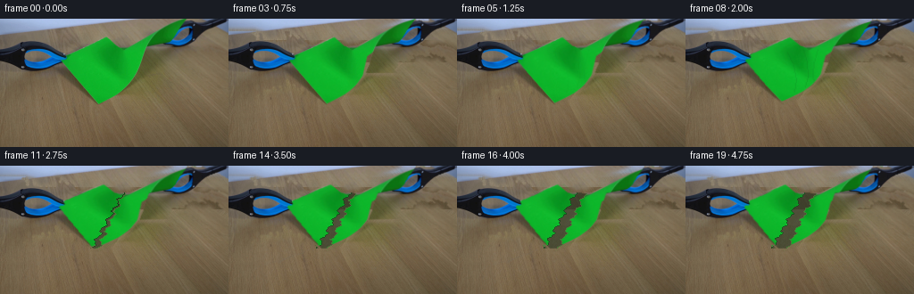
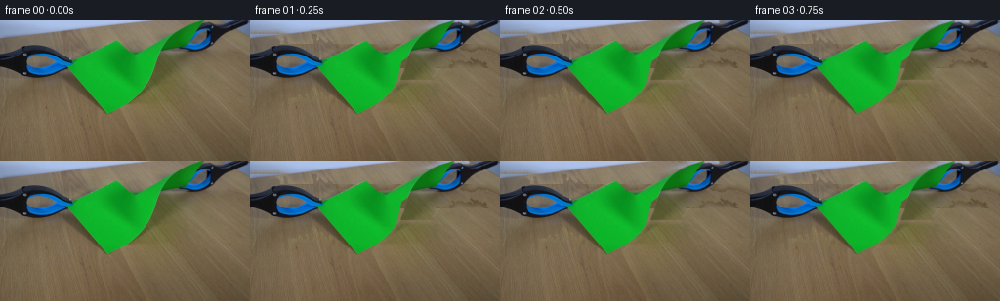
展开代码变化
--- 上一保存版本
+++ 本次保存版本
@@ -0,0 +1,341 @@
+from pathlib import Path
+
+import cv2
+import numpy as np
+from PIL import Image
+
+import artifact_io
+
+
+W, H = 256, 144
+N = 20
+
+
+def smoothstep(value):
+ value = np.clip(value, 0.0, 1.0)
+ return value * value * (3.0 - 2.0 * value)
+
+
+def paper_polygon():
+ return np.array(
+ [
+ [67, 48],
+ [72, 40],
+ [80, 36],
+ [95, 31],
+ [108, 24],
+ [118, 20],
+ [130, 31],
+ [145, 30],
+ [160, 22],
+ [165, 15],
+ [195, 4],
+ [209, 0],
+ [209, 16],
+ [198, 24],
+ [170, 31],
+ [155, 42],
+ [150, 64],
+ [142, 76],
+ [132, 84],
+ [120, 91],
+ [110, 96],
+ [102, 90],
+ [91, 75],
+ [79, 61],
+ [71, 51],
+ ],
+ dtype=np.float32,
+ )
+
+
+def polygon_alpha(points, feather=0.55):
+ scale = 4
+ mask = np.zeros((H * scale, W * scale), dtype=np.uint8)
+ cv2.fillPoly(mask, [np.round(points * scale).astype(np.int32)], 255)
+ alpha = cv2.resize(mask, (W, H), interpolation=cv2.INTER_AREA).astype(np.float32) / 255.0
+ if feather > 0:
+ alpha = cv2.GaussianBlur(alpha, (0, 0), feather)
+ return np.clip(alpha, 0.0, 1.0)
+
+
+def filled_component_mask(binary, min_area=25):
+ binary = binary.astype(np.uint8)
+ count, labels, stats, _ = cv2.connectedComponentsWithStats(binary, 8)
+ result = np.zeros_like(binary)
+ for index in range(1, count):
+ if stats[index, cv2.CC_STAT_AREA] >= min_area:
+ result[labels == index] = 1
+ contours, _ = cv2.findContours(result, cv2.RETR_EXTERNAL, cv2.CHAIN_APPROX_SIMPLE)
+ cv2.drawContours(result, contours, -1, 1, thickness=cv2.FILLED)
+ return result
+
+
+def clamp_masks(frame):
+ rgb = frame.astype(np.int16)
+ red, green, blue = rgb[:, :, 0], rgb[:, :, 1], rgb[:, :, 2]
+ green_paper = (green > 45) & (green - red > 12) & (green - blue > 8)
+ blue_grip = (blue > 78) & (blue - red > 20) & (blue - green > -12)
+ dark_body = (rgb.max(axis=2) < 122) & ~green_paper
+ yy, xx = np.mgrid[:H, :W]
+
+ left = (blue_grip | dark_body) & (xx < 136) & (yy > 13) & (yy < 106)
+ right = (blue_grip | dark_body) & (xx > 145) & (yy < 61)
+ left = filled_component_mask(left, min_area=90)
+ right = filled_component_mask(right, min_area=90)
+
+ kernel = cv2.getStructuringElement(cv2.MORPH_ELLIPSE, (3, 3))
+ left = cv2.morphologyEx(left, cv2.MORPH_CLOSE, kernel)
+ right = cv2.morphologyEx(right, cv2.MORPH_CLOSE, kernel)
+ left_alpha = cv2.GaussianBlur(left.astype(np.float32), (0, 0), 0.55)
+ right_alpha = cv2.GaussianBlur(right.astype(np.float32), (0, 0), 0.55)
+ return np.clip(left_alpha, 0.0, 1.0), np.clip(right_alpha, 0.0, 1.0)
+
+
+def table_texture(frame, foreground):
+ patch = frame[99:144].astype(np.float32)
+ mirrored = np.vstack([patch, patch[::-1]])
+ canvas = np.empty_like(frame, dtype=np.float32)
+ for y in range(H):
+ row = mirrored[y % len(mirrored)]
+ shift = int(round(1.4 * np.sin(y * 0.18)))
+ canvas[y] = np.roll(row, shift, axis=0)
+
+ for y in range(H):
+ visible = np.flatnonzero(foreground[y] < 0.08)
+ if len(visible) < 12:
+ continue
+ reference = frame[y, visible].astype(np.float32).mean(axis=0)
+ texture = canvas[y, visible].mean(axis=0)
+ canvas[y] = np.clip(canvas[y] - texture + reference, 0.0, 255.0)
+ return canvas
+
+
+def background_plate(frame, paper_alpha, left_alpha, right_alpha):
+ foreground = np.clip(paper_alpha + left_alpha + right_alpha, 0.0, 1.0)
+ support = (foreground > 0.03).astype(np.uint8) * 255
+ support = cv2.dilate(support, cv2.getStructuringElement(cv2.MORPH_ELLIPSE, (5, 5)), iterations=1)
+ support_alpha = cv2.GaussianBlur(support.astype(np.float32) / 255.0, (0, 0), 2.2)
+ texture = table_texture(frame, support_alpha)
+ plate = frame.astype(np.float32) * (1.0 - support_alpha[..., None]) + texture * support_alpha[..., None]
+ return np.clip(plate, 0.0, 255.0).astype(np.uint8)
+
+
+def tear_x(y):
+ y = np.asarray(y, dtype=np.float32)
+ t = np.clip((y - 30.0) / 66.0, 0.0, 1.0)
+ base = 138.0 - 27.0 * t
+ wobble = 1.8 * np.sin((y - 30.0) * 0.53) + 0.8 * np.sin((y - 30.0) * 1.31)
+ return base + wobble
+
+
+def tear_points(samples=64):
+ ys = np.linspace(31.0, 97.0, samples)
+ xs = tear_x(ys)
+ return np.column_stack([xs, ys]).astype(np.float32)
+
+
+def split_alpha(paper_alpha):
+ yy, xx = np.mgrid[:H, :W]
+ boundary = tear_x(yy.astype(np.float32))
+ left = paper_alpha * (xx < boundary)
+ right = paper_alpha * (xx >= boundary)
+ return left.astype(np.float32), right.astype(np.float32)
+
+
+def affine(source, destination):
+ return cv2.getAffineTransform(np.float32(source), np.float32(destination))
+
+
+def warp_rgba(frame, alpha, matrix):
+ rgb = cv2.warpAffine(
+ frame,
+ matrix,
+ (W, H),
+ flags=cv2.INTER_LINEAR,
+ borderMode=cv2.BORDER_REFLECT_101,
+ )
+ warped_alpha = cv2.warpAffine(
+ alpha,
+ matrix,
+ (W, H),
+ flags=cv2.INTER_LINEAR,
+ borderMode=cv2.BORDER_CONSTANT,
+ borderValue=0.0,
+ )
+ return rgb, np.clip(warped_alpha, 0.0, 1.0)
+
+
+def composite(canvas, rgb, alpha):
+ a = alpha[..., None]
+ return canvas.astype(np.float32) * (1.0 - a) + rgb.astype(np.float32) * a
+
+
+def transform_points(points, matrix):
+ homogeneous = np.column_stack([points, np.ones(len(points), dtype=np.float32)])
+ mapped = homogeneous @ matrix.T
+ return mapped.astype(np.float32)
+
+
+def draw_polyline(canvas, points, color, alpha, thickness=1):
+ overlay = canvas.copy()
+ pts = np.round(points).astype(np.int32).reshape(-1, 1, 2)
+ cv2.polylines(overlay, [pts], False, tuple(int(v) for v in color), thickness, cv2.LINE_AA)
+ mask = np.zeros((H, W), dtype=np.uint8)
+ cv2.polylines(mask, [pts], False, 255, thickness + 1, cv2.LINE_AA)
+ a = cv2.GaussianBlur(mask.astype(np.float32) / 255.0, (0, 0), 0.45)[..., None] * alpha
+ return canvas.astype(np.float32) * (1.0 - a) + overlay.astype(np.float32) * a
+
+
+def add_wrinkles(layer, strength):
+ if strength <= 0:
+ return layer
+ result = layer.astype(np.float32)
+ curves = [
+ np.array([[116, 38], [122, 52], [125, 70], [123, 84]], dtype=np.float32),
+ np.array([[132, 34], [136, 49], [137, 66], [134, 79]], dtype=np.float32),
+ np.array([[147, 35], [143, 50], [142, 64], [143, 75]], dtype=np.float32),
+ ]
+ for index, curve in enumerate(curves):
+ color = np.array([12, 92 + index * 5, 28], dtype=np.float32)
+ result = draw_polyline(result, curve, color, 0.22 * strength, thickness=1)
+ return np.clip(result, 0.0, 255.0).astype(np.uint8)
+
+
+def clamp_transform(alpha, side, pull):
+ if side == "left":
+ anchor = (121.0, 31.0)
+ dx = -2.7 * pull
+ dy = -0.4 * pull
+ angle = -1.15 * pull
+ else:
+ anchor = (152.0, 31.0)
+ dx = 2.7 * pull
+ dy = -0.4 * pull
+ angle = 1.15 * pull
+ rotation = cv2.getRotationMatrix2D(anchor, angle, 1.0)
+ rotation[0, 2] += dx
+ rotation[1, 2] += dy
+ warped_alpha = warp_rgba(np.zeros((H, W, 3), dtype=np.uint8), alpha, rotation)[1]
+ return warped_alpha
+
+
+def full_paper_transform(pull):
+ source = np.float32([[121, 31], [153, 31], [110, 96]])
+ destination = np.float32(
+ [
+ [121 - 2.7 * pull, 31 - 0.45 * pull],
+ [153 + 2.7 * pull, 31 - 0.45 * pull],
+ [110 - 4.4 * pull, 96 - 5.2 * pull],
+ ]
+ )
+ return affine(source, destination)
+
+
+def split_paper_transforms(pull, separation):
+ left = affine(
+ [[121, 31], [70, 48], [110, 96]],
+ [
+ [121 - 2.7 * pull - separation, 31 - 0.45 * pull],
+ [60 - 1.4 * pull - 0.35 * separation, 48 - 0.8 * pull],
+ [105.6 - 4.4 * pull - separation, 96 - 5.2 * pull],
+ ],
+ )
+ right = affine(
+ [[153, 31], [208, 0], [111, 96]],
+ [
+ [153 + 2.7 * pull + separation, 31 - 0.45 * pull],
+ [217 + 1.4 * pull + 0.35 * separation, 0 + 0.4 * pull],
+ [105.6 + 4.4 * pull + separation, 96 - 5.2 * pull],
+ ],
+ )
+ return left, right
+
+
+def add_tear_edges(canvas, left_matrix, right_matrix, gap, crack_phase):
+ points = tear_points(72)
+ left_edge = transform_points(points, left_matrix)
+ right_edge = transform_points(points, right_matrix)
+
+ if gap > 0.25:
+ shadow_polygon = np.vstack([left_edge, right_edge[::-1]])
+ overlay = canvas.copy()
+ cv2.fillPoly(overlay, [np.round(shadow_polygon).astype(np.int32)], (22, 42, 27))
+ mask = np.zeros((H, W), dtype=np.uint8)
+ cv2.fillPoly(mask, [np.round(shadow_polygon).astype(np.int32)], 255)
+ a = cv2.GaussianBlur(mask.astype(np.float32) / 255.0, (0, 0), 0.7)[..., None] * 0.5
+ canvas = canvas.astype(np.float32) * (1.0 - a) + overlay.astype(np.float32) * a
+
+ canvas = draw_polyline(canvas, left_edge, (22, 72, 28), 0.75, thickness=1)
+ canvas = draw_polyline(canvas, right_edge, (76, 132, 58), 0.72, thickness=1)
+
+ if crack_phase > 0:
+ end = 0.40 + 0.58 * crack_phase
+ count = max(6, int(len(points) * end))
+ crack = transform_points(points[:count], left_matrix)
+ canvas = draw_polyline(canvas, crack, (18, 65, 23), 0.85, thickness=1)
+ return np.clip(canvas, 0.0, 255.0).astype(np.uint8)
+
+
+def render(frame, background, paper_alpha, clamp_left, clamp_right):
+ frames = []
+ left_split, right_split = split_alpha(paper_alpha)
+ tear_start = 11
+
+ for index in range(N):
+ if index == 0:
+ frames.append(frame.copy())
+ continue
+
+ pull = smoothstep((index - 1.0) / 13.0)
+ canvas = background.astype(np.float32)
+
+ if index < tear_start:
+ wrinkle = smoothstep((index - 3.0) / 8.0)
+ source_layer = add_wrinkles(frame, wrinkle)
+ matrix = full_paper_transform(pull)
+ paper_rgb, paper_a = warp_rgba(source_layer, paper_alpha, matrix)
+ canvas = composite(canvas, paper_rgb, paper_a)
+ clamp_a_l = clamp_transform(clamp_left, "left", pull)
+ clamp_a_r = clamp_transform(clamp_right, "right", pull)
+ canvas = composite(canvas, frame, clamp_a_l)
+ canvas = composite(canvas, frame, clamp_a_r)
+ else:
+ separation = 0.35 + 4.4 * smoothstep((index - 11.0) / 7.0)
+ left_matrix, right_matrix = split_paper_transforms(pull, separation)
+ left_rgb, left_a = warp_rgba(frame, left_split, left_matrix)
+ right_rgb, right_a = warp_rgba(frame, right_split, right_matrix)
+ canvas = composite(canvas, left_rgb, left_a)
+ canvas = composite(canvas, right_rgb, right_a)
+
+ crack_phase = 0.38 if index == tear_start else 0.0
+ canvas = add_tear_edges(canvas, left_matrix, right_matrix, separation, crack_phase)
+
+ clamp_a_l = clamp_transform(clamp_left, "left", pull)
+ clamp_a_r = clamp_transform(clamp_right, "right", pull)
+ canvas = composite(canvas, frame, clamp_a_l)
+ canvas = composite(canvas, frame, clamp_a_r)
+
+ frames.append(np.clip(canvas, 0.0, 255.0).astype(np.uint8))
+
+ return np.stack(frames, axis=0)
+
+
+def main():
+ case_dir = Path(__file__).resolve().parent
+ frame = np.asarray(Image.open(case_dir / "first_frame.png").convert("RGB"), dtype=np.uint8)
+ assert frame.shape == (H, W, 3)
+
+ paper_alpha = polygon_alpha(paper_polygon(), feather=0.45)
+ clamp_left, clamp_right = clamp_masks(frame)
+ background = background_plate(frame, paper_alpha, clamp_left, clamp_right)
+
+ frames = render(frame, background, paper_alpha, clamp_left, clamp_right)
+ assert frames.shape == (N, H, W, 3)
+ assert np.array_equal(frames[0], frame)
+
+ artifact_io.save(frames, case_dir)
+
+
+if __name__ == "__main__":
+ main()
候选 02播放与检查图
点击播放 · 原生 RGB 像素

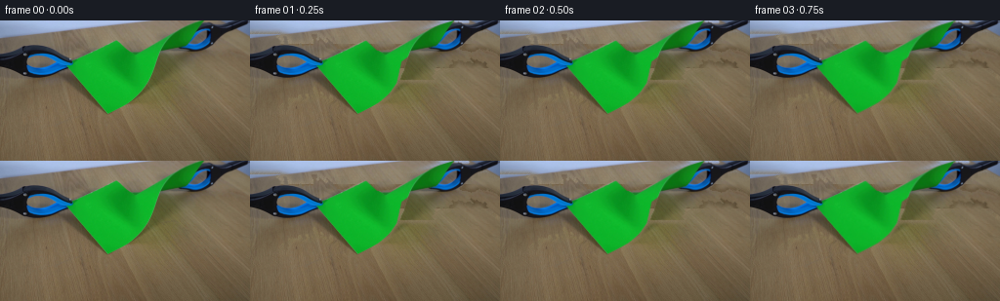
展开代码变化
--- 上一保存版本
+++ 本次保存版本
@@ -98,7 +98,7 @@
canvas = np.empty_like(frame, dtype=np.float32)
for y in range(H):
row = mirrored[y % len(mirrored)]
- shift = int(round(1.4 * np.sin(y * 0.18)))
+ shift = int(round(5.0 * np.sin(y * 0.18 + 0.4)))
canvas[y] = np.roll(row, shift, axis=0)
for y in range(H):
@@ -125,7 +125,11 @@
y = np.asarray(y, dtype=np.float32)
t = np.clip((y - 30.0) / 66.0, 0.0, 1.0)
base = 138.0 - 27.0 * t
- wobble = 1.8 * np.sin((y - 30.0) * 0.53) + 0.8 * np.sin((y - 30.0) * 1.31)
+ wobble = (
+ 1.9 * np.sin((y - 30.0) * 0.53)
+ + 0.9 * np.sin((y - 30.0) * 1.31)
+ + 0.45 * np.sin((y - 30.0) * 3.07)
+ )
return base + wobble
@@ -205,14 +209,14 @@
def clamp_transform(alpha, side, pull):
if side == "left":
anchor = (121.0, 31.0)
- dx = -2.7 * pull
- dy = -0.4 * pull
- angle = -1.15 * pull
+ dx = -5.0 * pull
+ dy = -0.6 * pull
+ angle = -1.8 * pull
else:
anchor = (152.0, 31.0)
- dx = 2.7 * pull
- dy = -0.4 * pull
- angle = 1.15 * pull
+ dx = 5.0 * pull
+ dy = -0.6 * pull
+ angle = 1.8 * pull
rotation = cv2.getRotationMatrix2D(anchor, angle, 1.0)
rotation[0, 2] += dx
rotation[1, 2] += dy
@@ -224,9 +228,9 @@
source = np.float32([[121, 31], [153, 31], [110, 96]])
destination = np.float32(
[
- [121 - 2.7 * pull, 31 - 0.45 * pull],
- [153 + 2.7 * pull, 31 - 0.45 * pull],
- [110 - 4.4 * pull, 96 - 5.2 * pull],
+ [121 - 5.0 * pull, 31 - 0.6 * pull],
+ [153 + 5.0 * pull, 31 - 0.6 * pull],
+ [110 - 6.6 * pull, 96 - 6.0 * pull],
]
)
return affine(source, destination)
@@ -236,17 +240,17 @@
left = affine(
[[121, 31], [70, 48], [110, 96]],
[
- [121 - 2.7 * pull - separation, 31 - 0.45 * pull],
- [60 - 1.4 * pull - 0.35 * separation, 48 - 0.8 * pull],
- [105.6 - 4.4 * pull - separation, 96 - 5.2 * pull],
+ [121 - 5.0 * pull - separation, 31 - 0.6 * pull],
+ [58 - 2.1 * pull - 0.35 * separation, 48 - 0.9 * pull],
+ [105.6 - 6.6 * pull - separation, 96 - 6.0 * pull],
],
)
right = affine(
[[153, 31], [208, 0], [111, 96]],
[
- [153 + 2.7 * pull + separation, 31 - 0.45 * pull],
- [217 + 1.4 * pull + 0.35 * separation, 0 + 0.4 * pull],
- [105.6 + 4.4 * pull + separation, 96 - 5.2 * pull],
+ [153 + 5.0 * pull + separation, 31 - 0.6 * pull],
+ [220 + 2.1 * pull + 0.35 * separation, 0 + 0.5 * pull],
+ [105.6 + 6.6 * pull + separation, 96 - 6.0 * pull],
],
)
return left, right
@@ -257,30 +261,23 @@
left_edge = transform_points(points, left_matrix)
right_edge = transform_points(points, right_matrix)
- if gap > 0.25:
- shadow_polygon = np.vstack([left_edge, right_edge[::-1]])
- overlay = canvas.copy()
- cv2.fillPoly(overlay, [np.round(shadow_polygon).astype(np.int32)], (22, 42, 27))
- mask = np.zeros((H, W), dtype=np.uint8)
- cv2.fillPoly(mask, [np.round(shadow_polygon).astype(np.int32)], 255)
- a = cv2.GaussianBlur(mask.astype(np.float32) / 255.0, (0, 0), 0.7)[..., None] * 0.5
- canvas = canvas.astype(np.float32) * (1.0 - a) + overlay.astype(np.float32) * a
-
- canvas = draw_polyline(canvas, left_edge, (22, 72, 28), 0.75, thickness=1)
- canvas = draw_polyline(canvas, right_edge, (76, 132, 58), 0.72, thickness=1)
+ if gap > 0.8:
+ canvas = draw_polyline(canvas, left_edge, (18, 65, 24), 0.68, thickness=1)
+ canvas = draw_polyline(canvas, right_edge, (86, 142, 65), 0.66, thickness=1)
if crack_phase > 0:
- end = 0.40 + 0.58 * crack_phase
- count = max(6, int(len(points) * end))
- crack = transform_points(points[:count], left_matrix)
- canvas = draw_polyline(canvas, crack, (18, 65, 23), 0.85, thickness=1)
+ count = max(7, int(len(points) * min(1.0, 0.18 + 0.82 * crack_phase)))
+ crack = transform_points(points[-count:], left_matrix)
+ canvas = draw_polyline(canvas, crack, (16, 61, 22), 0.9, thickness=1)
+ crack_hi = crack + np.array([0.65, 0.0], dtype=np.float32)
+ canvas = draw_polyline(canvas, crack_hi, (74, 132, 55), 0.38, thickness=1)
return np.clip(canvas, 0.0, 255.0).astype(np.uint8)
def render(frame, background, paper_alpha, clamp_left, clamp_right):
frames = []
left_split, right_split = split_alpha(paper_alpha)
- tear_start = 11
+ tear_start = 10
for index in range(N):
if index == 0:
@@ -301,14 +298,21 @@
canvas = composite(canvas, frame, clamp_a_l)
canvas = composite(canvas, frame, clamp_a_r)
else:
- separation = 0.35 + 4.4 * smoothstep((index - 11.0) / 7.0)
+ if index == tear_start:
+ separation = 0.0
+ else:
+ separation = 0.35 + 5.7 * smoothstep((index - tear_start) / 7.0)
left_matrix, right_matrix = split_paper_transforms(pull, separation)
left_rgb, left_a = warp_rgba(frame, left_split, left_matrix)
right_rgb, right_a = warp_rgba(frame, right_split, right_matrix)
canvas = composite(canvas, left_rgb, left_a)
canvas = composite(canvas, right_rgb, right_a)
- crack_phase = 0.38 if index == tear_start else 0.0
+ crack_phase = 0.0
+ if index == tear_start:
+ crack_phase = 0.34
+ elif index == tear_start + 1:
+ crack_phase = 0.82
canvas = add_tear_edges(canvas, left_matrix, right_matrix, separation, crack_phase)
clamp_a_l = clamp_transform(clamp_left, "left", pull)
可观测工具轨迹
实际执行的命令与返回图片。
命令 1exit 0
/bin/bash -c "pwd && rg --files -g '"'!*.mp4'"' -g '"'!*.mov'"' -g '"'!*.webm'"' | sed -n '1,160p'"
命令 2exit 0
/bin/bash -c 'cat prompt.txt'
命令 3exit 0
/bin/bash -c 'cat GENERATION_RULES.md'
命令 4exit 0
/bin/bash -c "find . -maxdepth 2 -type f -printf '%p %s bytes\\n' | sort"
命令 5exit 0
/bin/bash -c "sed -n '1,260p' artifact_io.py"
命令 6exit 0
/bin/bash -c "sed -n '1,260p' player_template.html"
命令 7exit 0
/bin/bash -c "python - <<'PY'
from PIL import Image
im=Image.open('first_frame.png')
print(im.mode, im.size)
PY"命令 8exit 0
/bin/bash -c "python - <<'PY'
from PIL import Image
im=Image.open('first_frame.png')
im.resize((1024,576), Image.Resampling.NEAREST).save('.tmp/first_4x.png')
im.crop((40,15,230,143)).resize((760,512), Image.Resampling.NEAREST).save('.tmp/crop_4x.png')
PY"命令 9exit 0
/bin/bash -c "python - <<'PY' mods=['cv2','scipy','skimage','numpy','PIL'] for m in mods: try: x=__import__(m); print(m, getattr(x,'__version__','ok')) except Exception as e: print(m,'MISSING',e) PY"
命令 10exit 0
/bin/bash -c "python - <<'PY'
import cv2, numpy as np
im=cv2.imread('first_frame.png')
hsv=cv2.cvtColor(im,cv2.COLOR_BGR2HSV)
# green mask
m=cv2.inRange(hsv,np.array([35,80,30]),np.array([90,255,255]))
ys,xs=np.where(m>0)
print('green bbox',xs.min(),ys.min(),xs.max(),ys.max(),'n',len(xs))
# per-row x extents
for y in range(20,105,5):
x=np.where(m[y]>0)[0]
if len(x): print(y,x.min(),x.max(),len(x))
# sample RGBs
for p in [(127,65),(100,50),(150,50),(80,60),(175,30),(130,85)]: print(p,im[p[1],p[0]][::-1])
PY"命令 11exit 0
/bin/bash -c "python - <<'PY'
import cv2, numpy as np
im=cv2.imread('first_frame.png')
hsv=cv2.cvtColor(im,cv2.COLOR_BGR2HSV)
for lo,hi in [((35,80,30),(90,255,255)),((35,100,30),(90,255,255)),((35,120,20),(90,255,255))]:
m=cv2.inRange(hsv,np.array(lo),np.array(hi))
print(lo, int((m>0).sum()))
# save mask
m=cv2.inRange(hsv,np.array([35,80,30]),np.array([90,255,255]))
cv2.imwrite('.tmp/green_mask.png',m)
PY"命令 12exit 0
/bin/bash -c "python - <<'PY'
import cv2,numpy as np
im=cv2.imread('first_frame.png')[:,:,::-1]
for y in [20,25,30,35,40,45,50,55,60,65,70,75,80,85,90,95]:
vals=[]
for x in [68,75,80,90,100,110,120,130,140,150,160,170,180,190,200,208]:
r,g,b=im[y,x]
if g>1.25*r and g>1.25*b and g>70: vals.append(x)
if vals: print(y,min(vals),max(vals),vals)
PY"命令 13exit 0
/bin/bash -c "python - <<'PY'
import cv2, numpy as np
im=cv2.imread('first_frame.png')
rgb=im[:,:,::-1]
r,g,b=[rgb[:,:,i].astype(float) for i in range(3)]
blue=(b>95)&(b>r*1.55)&(b>g*1.10)
dark=(rgb.max(axis=2)<105)
fg=blue|dark
out=np.zeros_like(im)
out[fg]=im[fg]
cv2.imwrite('.tmp/fg_mask.png',(fg*255).astype(np.uint8))
cv2.imwrite('.tmp/fg_cut.png',out)
# overlay mask red
ov=im.copy(); ov[fg]=[0,0,255]
cv2.imwrite('.tmp/fg_overlay.png',ov)
print('blue',blue.sum(),'dark',dark.sum(),'fg',fg.sum())
PY"命令 14exit 0
/bin/bash -c "python - <<'PY'
import cv2,numpy as np
im=cv2.imread('first_frame.png')[:,:,::-1]
r,g,b=[im[:,:,i].astype(float) for i in range(3)]
blue=(b>90)&(b>r*1.50)&(b>g*1.08)
dark=(im.max(axis=2)<130)&~blue
fg=blue|dark
ys,xs=np.where(fg)
print(xs.min(),xs.max(),ys.min(),ys.max())
cv2.imwrite('.tmp/fg2_mask.png',(fg*255).astype(np.uint8))
PY"命令 15exit 0
/bin/bash -c "python - <<'PY'
import cv2, numpy as np
im=cv2.imread('first_frame.png')
rgb=im[:,:,::-1]
r,g,b=[rgb[:,:,i].astype(float) for i in range(3)]
blue=(b>95)&(b>r*1.55)&(b>g*1.10)
dark=(rgb.max(axis=2)<105)
fg=blue|dark
# close + expand support
k=cv2.getStructuringElement(cv2.MORPH_ELLIPSE,(5,5))
mask=cv2.dilate(fg.astype(np.uint8),k,iterations=2)
# remove bg region: inpaint outside mask with telea
inp=cv2.inpaint(im,mask,5,cv2.INPAINT_TELEA)
# combine: original fg, inpaint bg
out=im.copy(); out[mask==0]=inp[mask==0]
cv2.imwrite('.tmp/bg_plate.png',out)
cv2.imwrite('.tmp/bg_mask.png',mask*255)
PY"命令 16exit 0
/bin/bash -c "python - <<'PY'
import cv2,numpy as np
im=cv2.imread('first_frame.png')[:,:,::-1]
r,g,b=[im[:,:,i].astype(float) for i in range(3)]
blue=(b>95)&(b>r*1.55)&(b>g*1.10)
dark=(im.max(axis=2)<110)
for name,fg in [('mask',blue|dark),('blue',blue),('dark',dark)]:
print(name,fg.sum())
# connected components fg
m=(blue|dark).astype(np.uint8)
n,lab,st,cen=cv2.connectedComponentsWithStats(m,8)
print(sorted([(int(s[4]),tuple(map(int,s[:4]))) for s in st[1:]], reverse=True)[:20])
PY"命令 17exit 0
/bin/bash -c "python - <<'PY'
import cv2, numpy as np
im=cv2.imread('first_frame.png')
rgb=im[:,:,::-1]
r,g,b=[rgb[:,:,i].astype(float) for i in range(3)]
blue=(b>95)&(b>r*1.55)&(b>g*1.10)
dark=(rgb.max(axis=2)<110)
m=(blue|dark).astype(np.uint8)
n,lab,st,cen=cv2.connectedComponentsWithStats(m,8)
# component large objects
for i in range(1,n):
if st[i,4] > 300:
cv2.imwrite(f'.tmp/comp{i}.png',(lab==i).astype(np.uint8)*255)
# display mask crop upscaled
cv2.imwrite('.tmp/mask_crop.png',cv2.resize(m[15:143,40:220]*255,(720,512),interpolation=cv2.INTER_NEAREST))
PY"命令 18exit 0
/bin/bash -c "python - <<'PY'
import cv2, numpy as np
im=cv2.imread('first_frame.png')
rgb=im[:,:,::-1]
r,g,b=[rgb[:,:,i].astype(float) for i in range(3)]
green=(g>70)&(g>1.30*r)&(g>1.30*b)
blue=(b>90)&(b>r*1.45)&(b>g*1.03)
dark=(rgb.max(axis=2)<120)
fg=green|blue|dark
m=(fg*255).astype(np.uint8)
m=cv2.dilate(m,cv2.getStructuringElement(cv2.MORPH_ELLIPSE,(5,5)),iterations=2)
# fill gaps inside combined foreground hull by contour
contours,_=cv2.findContours(m,cv2.RETR_EXTERNAL,cv2.CHAIN_APPROX_SIMPLE)
cv2.drawContours(m,contours,-1,255,-1)
# also mask entire central region between clamp grips
cv2.imwrite('.tmp/fullmask.png',m)
for rad in [3,7,12]:
inp=cv2.inpaint(im,m,rad,cv2.INPAINT_TELEA)
cv2.imwrite(f'.tmp/inp{rad}.png',inp)
PY"命令 19exit 0
/bin/bash -c "python - <<'PY'
import cv2,numpy as np
im=cv2.imread('first_frame.png')[:,:,::-1]
r,g,b=[im[:,:,i].astype(float) for i in range(3)]
green=(g>65)&(g>1.22*r)&(g>1.22*b)
# restrict plausible paper x/y
Y,X=np.mgrid[:144,:256]
green &= (X>55)&(X<215)&(Y<108)
print('green',green.sum())
cv2.imwrite('.tmp/gmask.png',green.astype(np.uint8)*255)
# print color stats
p=im[green]
print(p.mean(0),np.percentile(p,[5,25,50,75,95],axis=0))
PY"命令 20exit 0
/bin/bash -c "python - <<'PY'
import cv2,numpy as np
im=cv2.imread('first_frame.png')
rgb=im[:,:,::-1]
r,g,b=[rgb[:,:,i].astype(float) for i in range(3)]
green=(g>65)&(g>1.22*r)&(g>1.22*b)
Y,X=np.mgrid[:144,:256]
green &= (X>55)&(X<215)&(Y<108)
blue=(b>90)&(b>r*1.45)&(b>g*1.03)
dark=(rgb.max(axis=2)<120)
fg=green|blue|dark
m=cv2.dilate(fg.astype(np.uint8)*255,cv2.getStructuringElement(cv2.MORPH_ELLIPSE,(5,5)),iterations=2)
# hull foreground components
contours,_=cv2.findContours(m,cv2.RETR_EXTERNAL,cv2.CHAIN_APPROX_SIMPLE)
cv2.drawContours(m,contours,-1,255,-1)
cv2.imwrite('.tmp/fgmask3.png',m)
for rad in [5,10,15,20]:
inp=cv2.inpaint(im,m,rad,cv2.INPAINT_TELEA)
cv2.imwrite(f'.tmp/bg3_{rad}.png',inp)
PY"命令 21exit 0
/bin/bash -c "python - <<'PY'
import cv2,numpy as np
im=cv2.imread('first_frame.png')[:,:,::-1]
r,g,b=[im[:,:,i].astype(float) for i in range(3)]
green=(g>65)&(g>1.22*r)&(g>1.22*b)
Y,X=np.mgrid[:144,:256]
green &= (X>55)&(X<215)&(Y<108)
for y in [20,25,30,35,40,45,50,55,60,65,70,75,80,85,90,95]:
x=np.where(green[y])[0]
if len(x): print(y,x.min(),x.max(),x.tolist())
PY"命令 22exit 0
/bin/bash -c "python - <<'PY'
import cv2,numpy as np
im=cv2.imread('first_frame.png')[:,:,::-1]
for y in [20,21,22,23,24,25,26,27,28,29,30,31,32,33,34,35,36,37,38,39]:
# print colors at x 120..180 every5 where green
vals=[]
for x in range(80,201,10):
r,g,b=im[y,x]
if g>65 and g>1.22*r and g>1.22*b: vals.append(x)
print(y, vals)
PY"命令 23exit 0
/bin/bash -c "python - <<'PY'
import cv2, numpy as np
im=cv2.imread('first_frame.png')
rgb=im[:,:,::-1]
r,g,b=[rgb[:,:,i].astype(float) for i in range(3)]
green=(g>65)&(g>1.22*r)&(g>1.22*b)
Y,X=np.mgrid[:144,:256]
green &= (X>55)&(X<215)&(Y<108)
# strongest foreground mask for inpaint: green plus obvious blue/dark objects
blue=(b>90)&(b>r*1.45)&(b>g*1.03)
dark=(rgb.max(axis=2)<120)
m=(green|blue|dark).astype(np.uint8)*255
m=cv2.morphologyEx(m,cv2.MORPH_CLOSE,cv2.getStructuringElement(cv2.MORPH_ELLIPSE,(7,7)))
m=cv2.dilate(m,cv2.getStructuringElement(cv2.MORPH_ELLIPSE,(5,5)),iterations=2)
# fill only top central paper convex hull manually
# Inpaint only foreground, not all hull
inp=cv2.inpaint(im,m,15,cv2.INPAINT_TELEA)
cv2.imwrite('.tmp/bg4.png',inp)
# Median table fill for masked pixels from nearby y below object (bottom texture likely)
out=im.copy()
# use patch source shifted down 45 px, perhaps table texture
for y in range(144):
pass
# save
PY"命令 24exit 0
/bin/bash -c "python - <<'PY'
import cv2,numpy as np
im=cv2.imread('first_frame.png')[:,:,::-1]
for y in range(15,45):
xs=[]
for x in range(60,220):
r,g,b=im[y,x]
if g>65 and g>1.22*r and g>1.22*b: xs.append(x)
# intervals
ints=[]
if xs:
s=xs[0]; prev=xs[0]
for x in xs[1:]:
if x>prev+1:
ints.append((s,prev)); s=x
prev=x
ints.append((s,prev))
print(y,ints)
PY"命令 25exit 0
/bin/bash -c "python - <<'PY'
import cv2,numpy as np
im=cv2.imread('first_frame.png')[:,:,::-1]
for y in range(15,101,2):
xs=[]
for x in range(60,220):
r,g,b=im[y,x]
if g>65 and g>1.22*r and g>1.22*b: xs.append(x)
ints=[]
if xs:
s=xs[0]; prev=xs[0]
for x in xs[1:]:
if x>prev+1:
ints.append((s,prev)); s=x
prev=x
ints.append((s,prev))
print(y,ints)
PY"命令 26exit 0
/bin/bash -c "python - <<'PY'
import cv2,numpy as np
im=cv2.imread('first_frame.png')[:,:,::-1]
r,g,b=[im[:,:,i].astype(float) for i in range(3)]
green=(g>65)&(g>1.22*r)&(g>1.22*b)
Y,X=np.mgrid[:144,:256]
green &= (X>55)&(X<215)&(Y<108)
blue=(b>90)&(b>r*1.45)&(b>g*1.03)
dark=(im.max(axis=2)<120)
m=(green|blue|dark).astype(np.uint8)*255
m=cv2.morphologyEx(m,cv2.MORPH_CLOSE,cv2.getStructuringElement(cv2.MORPH_ELLIPSE,(7,7)))
m=cv2.dilate(m,cv2.getStructuringElement(cv2.MORPH_ELLIPSE,(5,5)),iterations=2)
inp=cv2.inpaint(im,m,15,cv2.INPAINT_TELEA)
# blend bottom horizontal table texture into masked region using row y=120 with perspective y-offset
out=inp.copy()
ys,xs=np.where(m>0)
for y,x in zip(ys,xs):
# use table texture at same x, y+55 if available, brightness correction
sy=min(143,y+50)
out[y,x]=im[sy,x]
# blur seam region maybe
cv2.imwrite('.tmp/bg5.png',out)
PY"命令 27exit 0
/bin/bash -c "python - <<'PY'
import cv2,numpy as np
im=cv2.imread('first_frame.png')
rgb=im[:,:,::-1]
r,g,b=[rgb[:,:,i].astype(float) for i in range(3)]
green=(g>65)&(g>1.22*r)&(g>1.22*b)
Y,X=np.mgrid[:144,:256]
green &= (X>55)&(X<215)&(Y<108)
blue=(b>90)&(b>r*1.45)&(b>g*1.03)
dark=(rgb.max(axis=2)<120)
m=(green|blue|dark).astype(np.uint8)*255
m=cv2.morphologyEx(m,cv2.MORPH_CLOSE,cv2.getStructuringElement(cv2.MORPH_ELLIPSE,(7,7)))
m=cv2.dilate(m,cv2.getStructuringElement(cv2.MORPH_ELLIPSE,(5,5)),iterations=2)
# Fill using vertical interpolation per x between nearest unmasked pixels above/below
out=im.copy().astype(np.float32)
ys,xs=np.where(m>0)
for y,x in zip(ys,xs):
up=y-1
while up>=0 and m[up,x]: up-=1
dn=y+1
while dn<144 and m[dn,x]: dn+=1
if up>=0 and dn<144:
a=im[up,x].astype(float); c=im[dn,x].astype(float); t=(y-up)/(dn-up)
out[y,x]=a*(1-t)+c*t
elif up>=0: out[y,x]=im[up,x]
elif dn<144: out[y,x]=im[dn,x]
# smooth only fill with broad blur
blur=cv2.GaussianBlur(out.astype(np.uint8),(0,0),5)
alpha=cv2.GaussianBlur(m.astype(np.float32)/255,(0,0),2)[...,None]
out2=out*(1-alpha)+blur*alpha
cv2.imwrite('.tmp/bg6.png',np.clip(out2,0,255).astype(np.uint8))
PY"命令 28exit 0
/bin/bash -c "python - <<'PY'
import cv2,numpy as np
im=cv2.imread('first_frame.png')[:,:,::-1]
r,g,b=[im[:,:,i].astype(float) for i in range(3)]
green=(g>65)&(g>1.22*r)&(g>1.22*b)
Y,X=np.mgrid[:144,:256]
green &= (X>55)&(X<215)&(Y<108)
print(np.unique(green.sum(axis=1),return_counts=True))
# per x ys
for x in [68,72,76,80,90,100,110,120,130,140,150,160,170,180,190,200,208]:
ys=np.where(green[:,x])[0]
if len(ys): print(x,ys.min(),ys.max())
PY"命令 29exit 0
/bin/bash -c "python - <<'PY'
import cv2,numpy as np
im=cv2.imread('first_frame.png')[:,:,::-1]
# Print crops as ascii class G/B/K/T
for y in range(14,101,4):
s=''
for x in range(60,211,2):
r,g,b=im[y,x]
if g>65 and g>1.22*r and g>1.22*b: c='G'
elif b>90 and b>r*1.45 and b>g*1.03: c='B'
elif max(r,g,b)<120: c='K'
else:c='.'
s+=c
print(f'{y:3d}',s)
PY"命令 30exit 0
/bin/bash -c "python - <<'PY'
import cv2,numpy as np
im=cv2.imread('first_frame.png')[:,:,::-1]
for x in [70,75,80,85,90,95,100,105,110,115,120,125,130,135,140,145,150,155,160,165,170,175,180,185,190,195,200]:
ys=[]
for y in range(0,110):
r,g,b=im[y,x]
if g>65 and g>1.22*r and g>1.22*b: ys.append(y)
if ys: print(x,min(ys),max(ys))
PY"命令 31exit 0
/bin/bash -c "python - <<'PY'
import cv2,numpy as np
im=cv2.imread('first_frame.png')
# HSV stats green hue, sat, val
hsv=cv2.cvtColor(im,cv2.COLOR_BGR2HSV)
rgb=im[:,:,::-1]; r,g,b=[rgb[:,:,i].astype(float) for i in range(3)]
green=(g>65)&(g>1.22*r)&(g>1.22*b)
Y,X=np.mgrid[:144,:256]; green &= (X>55)&(X<215)&(Y<108)
print('hsv',np.percentile(hsv[green],[1,5,25,50,75,95,99],axis=0))
# row green start/end robust from segments, use widths
PY"命令 32exit 1
/bin/bash -c "python - <<'PY'
import cv2,numpy as np
im=cv2.imread('first_frame.png')[:,:,::-1]
r,g,b=[im[:,:,i].astype(float) for i in range(3)]
green=(g>65)&(g>1.22*r)&(g>1.22*b)
Y,X=np.mgrid[:144,:256]; green &= (X>55)&(X<215)&(Y<108)
# mask polygons fill center black gap for y 32..35?
m=green.astype(np.uint8)*255
m=cv2.morphologyEx(m,cv2.MORPH_CLOSE,cv2.getStructuringElement(cv2.MORPH_ELLIPSE,(5,5)))
# draw polygon corresponding paper boundary outer hull
pts=np.column_stack(np.where(green)[::-1])
hull=cv2.convexHull(pts.reshape(-1,1,2))
cv2.imwrite('.tmp/hull.png',hull)
print(hull.reshape(-1,2))
PY"命令 33exit 0
/bin/bash -c "python - <<'PY'
import cv2,numpy as np
im=cv2.imread('first_frame.png')[:,:,::-1]
r,g,b=[im[:,:,i].astype(float) for i in range(3)]
green=(g>65)&(g>1.22*r)&(g>1.22*b)
Y,X=np.mgrid[:144,:256]; green &= (X>55)&(X<215)&(Y<108)
pts=np.column_stack(np.where(green)[::-1])
hull=cv2.convexHull(pts.reshape(-1,1,2))
print(hull.reshape(-1,2))
PY"命令 34exit 0
/bin/bash -c "python - <<'PY'
import cv2,numpy as np
im=cv2.imread('first_frame.png')[:,:,::-1]
r,g,b=[im[:,:,i].astype(float) for i in range(3)]
green=(g>65)&(g>1.22*r)&(g>1.22*b)
Y,X=np.mgrid[:144,:256]; green &= (X>55)&(X<215)&(Y<108)
# look at gap central y=32 x 130..165 colors
for y in [30,31,32,33,34]:
print(y,[(x,im[y,x].tolist()) for x in range(130,166,2)])
PY"命令 35exit 0
/bin/bash -c "python - <<'PY'
import cv2,numpy as np
im=cv2.imread('first_frame.png')
# save several inpaint variants with polygon-only mask of paper/clamps, not dark threshold
# use color classification and manual region constraints
rgb=im[:,:,::-1]; r,g,b=[rgb[:,:,i].astype(float) for i in range(3)]
green=(g>65)&(g>1.18*r)&(g>1.18*b)
blue=(b>85)&(b>r*1.35)&(b>g*0.98)
Y,X=np.mgrid[:144,:256]
# hand polygons foreground objects
paper=np.array([[67,48],[72,40],[80,36],[95,31],[108,24],[118,20],[165,15],[195,4],[209,0],[209,16],[198,24],[170,31],[155,42],[150,64],[142,76],[132,84],[120,91],[110,96],[102,90],[91,75],[79,61],[71,51]],np.int32)
clamps=np.array([[0,18],[112,25],[113,40],[130,46],[130,90],[120,110],[104,111],[91,97],[85,75],[75,50],[60,40],[35,42],[20,50],[0,60]],np.int32)
m=np.zeros((144,256),np.uint8)
cv2.fillPoly(m,[paper],255)
# clamp components threshold near left/right, use color mask components for objects
fg=((green|blue|(rgb.max(axis=2)<110)) & ((X<132)|(X>120))).astype(np.uint8)*255
# take contour components >100
n,lab,st,cen=cv2.connectedComponentsWithStats(fg,8)
for i in range(1,n):
if st[i,4]>80:
m[lab==i]=255
m=cv2.dilate(m,cv2.getStructuringElement(cv2.MORPH_ELLIPSE,(5,5)),iterations=1)
for rad in [5,10,20]:
out=cv2.inpaint(im,m,rad,cv2.INPAINT_NS)
cv2.imwrite(f'.tmp/bg_ns{rad}.png',out)
cv2.imwrite('.tmp/bg_poly_mask.png',m)
PY"命令 36exit 0
/bin/bash -c "python - <<'PY'
import cv2,numpy as np
im=cv2.imread('first_frame.png')
# Use a manually defined green-paper mask based on row extents, including dark shaded parts.
# Start with broad green then construct shape polygon.
paper=np.array([[67,48],[72,40],[80,36],[95,31],[108,24],[118,20],[165,15],[195,4],[209,0],[209,16],[198,24],[170,31],[155,42],[150,64],[142,76],[132,84],[120,91],[110,96],[102,90],[91,75],[79,61],[71,51]],np.int32)
m=np.zeros((144,256),np.uint8)
cv2.fillPoly(m,[paper],255)
# use mask slightly expanded
m=cv2.dilate(m,cv2.getStructuringElement(cv2.MORPH_ELLIPSE,(5,5)),iterations=1)
# inpaint paper only; clamp region use original as static fg
out=cv2.inpaint(im,m,8,cv2.INPAINT_NS)
cv2.imwrite('.tmp/bg_paper.png',out)
PY"命令 37exit 0
/bin/bash -c "python - <<'PY'
import cv2,numpy as np
im=cv2.imread('first_frame.png')
# Rectangular source table region clear of foreground: y=100..143, x=0..255 mostly; also below paper around y 100-143
# use patch texture from y=105:143 and tile/stretch to mask using seamless-ish clone, then blur to fill.
m=np.zeros((144,256),np.uint8)
paper=np.array([[67,48],[72,40],[80,36],[95,31],[108,24],[118,20],[165,15],[195,4],[209,0],[209,16],[198,24],[170,31],[155,42],[150,64],[142,76],[132,84],[120,91],[110,96],[102,90],[91,75],[79,61],[71,51]],np.int32)
cv2.fillPoly(m,[paper],255)
m=cv2.dilate(m,cv2.getStructuringElement(cv2.MORPH_ELLIPSE,(3,3)),iterations=1)
# image fill based on interpolate horizontally from y=103 row and vertical baseline y=100..143 using cv2.inpaint
out=cv2.inpaint(im,m,4,cv2.INPAINT_TELEA)
# The inpaint is enough if edge leakage is hidden by paper.
cv2.imwrite('.tmp/bg_paper2.png',out)
PY"命令 38exit 0
/bin/bash -c "python - <<'PY'
import cv2,numpy as np
im=cv2.imread('first_frame.png')
paper=np.array([[67,48],[72,40],[80,36],[95,31],[108,24],[118,20],[165,15],[195,4],[209,0],[209,16],[198,24],[170,31],[155,42],[150,64],[142,76],[132,84],[120,91],[110,96],[102,90],[91,75],[79,61],[71,51]],np.int32)
m=np.zeros((144,256),np.uint8); cv2.fillPoly(m,[paper],255); m=cv2.dilate(m,cv2.getStructuringElement(cv2.MORPH_ELLIPSE,(7,7)),iterations=2)
# fill with table texture based on y=105..143 using horizontal row translation by y+50
out=im.copy()
for y in range(144):
for x in range(256):
if m[y,x]:
sy=min(143,y+55)
# shift brightness to match local baseline via blur maybe
out[y,x]=im[sy,x]
# blur mask region to eliminate object ghost seams
blur=cv2.GaussianBlur(out,(0,0),4)
a=cv2.GaussianBlur(m.astype(np.float32)/255,(0,0),3)[...,None]
out=(out*(1-a)+blur*a).astype(np.uint8)
cv2.imwrite('.tmp/bg_paper3.png',out)
PY"命令 39exit 0
/bin/bash -c "python - <<'PY'
import cv2,numpy as np
im=cv2.imread('first_frame.png')
# Rectangular table texture tiles: print dimensions and choose a clean band y=105..143
for y in [100,105,110,115,120,125,130,135,140]:
print(y, im[y,0:256:20,::-1].tolist())
PY"命令 40exit 0
/bin/bash -c "python - <<'PY'
import cv2,numpy as np
im=cv2.imread('first_frame.png')
# build texture from y=104..143, mirrored and shifted vertically
band=im[104:144].copy()
tile=np.vstack([band, cv2.flip(band,0), band, cv2.flip(band,0)])
canvas=np.tile(tile,(2,1))[:144,:256]
# adjust per row brightness to nearby table brightness approximate from original left side
# blend canvas only masked paper region
paper=np.array([[67,48],[72,40],[80,36],[95,31],[108,24],[118,20],[165,15],[195,4],[209,0],[209,16],[198,24],[170,31],[155,42],[150,64],[142,76],[132,84],[120,91],[110,96],[102,90],[91,75],[79,61],[71,51]],np.int32)
m=np.zeros((144,256),np.uint8); cv2.fillPoly(m,[paper],255); m=cv2.dilate(m,cv2.getStructuringElement(cv2.MORPH_ELLIPSE,(5,5)),iterations=2)
a=cv2.GaussianBlur(m.astype(np.float32)/255,(0,0),2)[...,None]
out=im*(1-a)+canvas*a
# blur canvas edge only?
cv2.imwrite('.tmp/bg_tile.png',np.clip(out,0,255).astype(np.uint8))
PY"命令 41exit 0
/bin/bash -c "python - <<'PY'
import cv2,numpy as np
im=cv2.imread('first_frame.png')
# Fill paper region using texture from lower table, remapped vertically with smooth interpolation.
paper=np.array([[67,48],[72,40],[80,36],[95,31],[108,24],[118,20],[165,15],[195,4],[209,0],[209,16],[198,24],[170,31],[155,42],[150,64],[142,76],[132,84],[120,91],[110,96],[102,90],[91,75],[79,61],[71,51]],np.int32)
m=np.zeros((144,256),np.uint8); cv2.fillPoly(m,[paper],255); m=cv2.dilate(m,cv2.getStructuringElement(cv2.MORPH_ELLIPSE,(5,5)),iterations=2)
# interpolate per x between top visible bg and bottom visible bg, then add texture from row shifted
out=im.copy().astype(np.float32)
for x in range(256):
ys=np.where(m[:,x]>0)[0]
if not len(ys): continue
y0,y1=ys.min(),ys.max()
up=max(0,y0-2); dn=min(143,y1+2)
base=im[up,x].astype(float)*(1-(np.arange(y0,y1+1)-up)/(dn-up))[:,None]+im[dn,x].astype(float)*((np.arange(y0,y1+1)-up)/(dn-up))[:,None]
# texture sample from x-shifted lower band (avoid same object)
tex=im[110:111,x].astype(float)-im[110,x].astype(float)
out[y0:y1+1,x]=base+0.35*tex
# blend masked
a=cv2.GaussianBlur(m.astype(np.float32)/255,(0,0),1.5)[...,None]
out=im*(1-a)+out*a
cv2.imwrite('.tmp/bg_interp.png',np.clip(out,0,255).astype(np.uint8))
PY"命令 42exit 0
/bin/bash -c "python - <<'PY'
import cv2,numpy as np
im=cv2.imread('first_frame.png')
rgb=im[:,:,::-1].astype(float); r,g,b=[rgb[:,:,i] for i in range(3)]
green=(g>45)&(g>r+12)&(g>b+8)
blue=(b>85)&(b>r*1.35)&(b>g*0.98)
dark=(rgb.max(axis=2)<115)&~green
Y,X=np.mgrid[:144,:256]
left=((blue|dark)&(X<136)&(Y>14)).astype(np.uint8)
right=((blue|dark)&(X>145)).astype(np.uint8)
# clean comps
for name,m in [('left',left),('right',right),('green',green.astype(np.uint8))]:
n,lab,st,cen=cv2.connectedComponentsWithStats(m,8)
out=np.zeros_like(m)
for i in range(1,n):
if st[i,4]>25: out[lab==i]=255
cv2.imwrite(f'.tmp/{name}_mask.png',out*255)
ov=im.copy(); ov[out>0]=[0,0,255]
cv2.imwrite(f'.tmp/{name}_overlay.png',ov)
print(name,'raw',m.sum(),'clean',out.sum(),'comps',sorted(st[1:,4].tolist(),reverse=True)[:10])
PY"命令 43exit 0
/bin/bash -c "python - <<'PY'
import cv2,numpy as np
im=cv2.imread('first_frame.png')
rgb=im[:,:,::-1].astype(float); r,g,b=[rgb[:,:,i] for i in range(3)]
green=(g>45)&(g>r+12)&(g>b+8)
blue=(b>85)&(b>r*1.35)&(b>g*0.98)
dark=(rgb.max(axis=2)<115)&~green
Y,X=np.mgrid[:144,:256]
for name,m in [('left',((blue|dark)&(X<136)&(Y>14))),('right',((blue|dark)&(X>145))),('green',green)]:
m=m.astype(np.uint8)
n,lab,st,cen=cv2.connectedComponentsWithStats(m,8)
out=np.zeros_like(m)
for i in range(1,n):
if st[i,4]>25: out[lab==i]=1
cv2.imwrite(f'.tmp/{name}_mask2.png',out*255)
ov=im.copy(); ov[out>0]=[0,0,255]
cv2.imwrite(f'.tmp/{name}_overlay2.png',ov)
print(name,out.sum())
PY"命令 44exit 0
/bin/bash -c "python - <<'PY'
import cv2,numpy as np
im=cv2.imread('first_frame.png')
rgb=im[:,:,::-1].astype(float); r,g,b=[rgb[:,:,i] for i in range(3)]
green=(g>45)&(g>r+12)&(g>b+8)
blue=(b>85)&(b>r*1.35)&(b>g*0.98)
dark=(rgb.max(axis=2)<115)&~green
Y,X=np.mgrid[:144,:256]
left=(blue|dark)&(X<136)&(Y>14)
right=(blue|dark)&(X>145)
m=(left|right).astype(np.uint8)
n,lab,st,cen=cv2.connectedComponentsWithStats(m,8)
for i in range(1,n):
if st[i,4]>20: print(i,st[i].tolist())
PY"命令 45exit 0
/bin/bash -c "python - <<'PY'
import cv2,numpy as np
im=cv2.imread('first_frame.png')
rgb=im[:,:,::-1].astype(float); r,g,b=[rgb[:,:,i] for i in range(3)]
green=(g>45)&(g>r+12)&(g>b+8)
blue=(b>85)&(b>r*1.35)&(b>g*0.98)
dark=(rgb.max(axis=2)<115)&~green
Y,X=np.mgrid[:144,:256]
obj=((blue|dark)&(Y<105)&((X<135)|(X>145)))
m=obj.astype(np.uint8)
n,lab,st,cen=cv2.connectedComponentsWithStats(m,8)
out=np.zeros_like(m)
for i in range(1,n):
if st[i,4]>100: out[lab==i]=1
cv2.imwrite('.tmp/objmask.png',out*255)
cv2.imwrite('.tmp/objoverlay.png',im*(1-out[...,None])+np.array([0,0,255])*out[...,None])
print(out.sum())
PY"命令 46exit 0
/bin/bash -c "python - <<'PY'
import cv2,numpy as np
im=cv2.imread('first_frame.png')
rgb=im[:,:,::-1].astype(float); r,g,b=[rgb[:,:,i] for i in range(3)]
green=(g>45)&(g>r+12)&(g>b+8)
blue=(b>85)&(b>r*1.35)&(b>g*0.98)
dark=(rgb.max(axis=2)<115)&~green
Y,X=np.mgrid[:144,:256]
obj=((blue|dark)&(Y<105)&((X<135)|(X>145)))
m=obj.astype(np.uint8)
n,lab,st,cen=cv2.connectedComponentsWithStats(m,8)
out=np.zeros_like(m)
for i in range(1,n):
if st[i,4]>100: out[lab==i]=1
cv2.imwrite('.tmp/objmask.png',out*255)
ov=im.copy(); ov[out>0]=[0,0,255]; cv2.imwrite('.tmp/objoverlay.png',ov)
PY"命令 47exit 0
/bin/bash -c "python - <<'PY'
import cv2,numpy as np
im=cv2.imread('first_frame.png')
# probe bright blue colors
rgb=im[:,:,::-1].astype(int)
b=rgb[:,:,2];r=rgb[:,:,0];g=rgb[:,:,1]
m=(b>100)&(b>r+25)&(b>g-5)
ys,xs=np.where(m)
print(len(xs), xs.min(),xs.max(),ys.min(),ys.max())
for p in [(10,20),(20,30),(30,35),(90,30),(220,20),(235,20),(110,30),(230,40),(65,30)]:
x,y=p; print(p,rgb[y,x])
PY"命令 48exit 0
/bin/bash -c "python - <<'PY'
import cv2,numpy as np
im=cv2.imread('first_frame.png')
rgb=im[:,:,::-1].astype(int); r,g,b=[rgb[:,:,i] for i in range(3)]
# blue saturation condition tuned
blue=(b>75)&(b-r>20)&(b-g>-10)
green=(g>45)&(g-r>12)&(g-b>8)
dark=(rgb.max(axis=2)<115)&~green
Y,X=np.mgrid[:144,:256]
obj=((blue|dark)&(Y<110)&((X<135)|(X>145)))
m=obj.astype(np.uint8)
n,lab,st,cen=cv2.connectedComponentsWithStats(m,8)
out=np.zeros_like(m)
for i in range(1,n):
if st[i,4]>100: out[lab==i]=1
cv2.imwrite('.tmp/objmask2.png',out*255)
ov=im.copy(); ov[out>0]=[0,0,255]; cv2.imwrite('.tmp/objoverlay2.png',ov)
print(out.sum())
PY"命令 49exit 0
/bin/bash -c "python - <<'PY'
import cv2,numpy as np
im=cv2.imread('first_frame.png')
# Build custom bg from actual table, fill region inside hand paper polygon with texture from y=105-143 offset pattern, preserving all outside.
paper=np.array([[67,48],[72,40],[80,36],[95,31],[108,24],[118,20],[165,15],[195,4],[209,0],[209,16],[198,24],[170,31],[155,42],[150,64],[142,76],[132,84],[120,91],[110,96],[102,90],[91,75],[79,61],[71,51]],np.int32)
m=np.zeros((144,256),np.uint8); cv2.fillPoly(m,[paper],255); m=cv2.dilate(m,cv2.getStructuringElement(cv2.MORPH_ELLIPSE,(5,5)),iterations=2)
# shift lower band upward by 100: use im[y+100,x], and brightness match
out=im.copy()
for y in range(0,104):
xs=np.where(m[y]>0)[0]
if not len(xs): continue
sy=min(143,y+50)
# brightness scale using left and right background local samples around object; simple global adjust per row
for x in xs:
sx=x
out[y,sx]=im[sy,sx]
# blur fill heavily but only inside mask
blur=cv2.GaussianBlur(out,(0,0),3)
a=cv2.GaussianBlur(m.astype(np.float32)/255,(0,0),1)[...,None]
out=(out*(1-a)+blur*a).astype(np.uint8)
cv2.imwrite('.tmp/bg_finaltest.png',out)
PY"命令 50exit 0
/bin/bash -c "python - <<'PY'
import cv2,numpy as np
im=cv2.imread('first_frame.png')
# compare horizontal texture row periodicity via autocorr maybe use y=120 row; use patch texture from table region below paper y=105:143 and resize vertically
patch=im[104:144,0:256].astype(np.float32)
# resize to cover whole image vertically, preserving texture horizontally; then brightness gradient correction using original unmasked pixels
bgtex=cv2.resize(patch,(256,144),interpolation=cv2.INTER_CUBIC)
# blend to preserve original outside paper and clamps
paper=np.array([[67,48],[72,40],[80,36],[95,31],[108,24],[118,20],[165,15],[195,4],[209,0],[209,16],[198,24],[170,31],[155,42],[150,64],[142,76],[132,84],[120,91],[110,96],[102,90],[91,75],[79,61],[71,51]],np.int32)
m=np.zeros((144,256),np.uint8); cv2.fillPoly(m,[paper],255); m=cv2.dilate(m,cv2.getStructuringElement(cv2.MORPH_ELLIPSE,(5,5)),iterations=2)
a=cv2.GaussianBlur(m.astype(np.float32)/255,(0,0),2)[...,None]
out=im*(1-a)+bgtex*a
cv2.imwrite('.tmp/bg_resize.png',np.clip(out,0,255).astype(np.uint8))
PY"命令 51exit 0
/bin/bash -c "python - <<'PY'
import cv2,numpy as np
im=cv2.imread('first_frame.png')
# texture from a clean table region: use y=104:143, horizontally tile at original scale, with perspective scale small
src=im[104:143].astype(np.float32)
bg=cv2.resize(src,(256,40),interpolation=cv2.INTER_LINEAR)
# tile upward from y=40 to 104, repeat with slight x shifts
canvas=im.astype(np.float32).copy()
for y in range(0,144):
sy=(y-104)%40
# use original source row shifted x by sin pattern to break repeating
shift=int(2*np.sin(y*0.7))
row=np.roll(bg[sy],shift,axis=0)
canvas[y]=row
# brightness per row from original table sides (x<55,x>215)
for y in range(144):
ref=np.concatenate([im[y,0:45],im[y,215:256]],axis=0).mean(axis=0)
tex=np.concatenate([canvas[y,0:45],canvas[y,215:256]],axis=0).mean(axis=0)
canvas[y]*=ref/np.maximum(tex,1)
# preserve unmasked
paper=np.array([[67,48],[72,40],[80,36],[95,31],[108,24],[118,20],[165,15],[195,4],[209,0],[209,16],[198,24],[170,31],[155,42],[150,64],[142,76],[132,84],[120,91],[110,96],[102,90],[91,75],[79,61],[71,51]],np.int32)
m=np.zeros((144,256),np.uint8); cv2.fillPoly(m,[paper],255); m=cv2.dilate(m,cv2.getStructuringElement(cv2.MORPH_ELLIPSE,(5,5)),iterations=2)
a=cv2.GaussianBlur(m.astype(np.float32)/255,(0,0),2)[...,None]
out=im*(1-a)+canvas*a
cv2.imwrite('.tmp/bg_texture_clean.png',np.clip(out,0,255).astype(np.uint8))
PY"命令 52exit 0
/bin/bash -c "python - <<'PY'
import cv2,numpy as np
im=cv2.imread('first_frame.png')
rgb=im[:,:,::-1].astype(float); r,g,b=[rgb[:,:,i] for i in range(3)]
green=(g>45)&(g>r+12)&(g>b+8)
Y,X=np.mgrid[:144,:256]
green &= (X>55)&(X<215)&(Y<108)
# create clean mask by closing/filling, and use bilateral edge preservation?
m=green.astype(np.uint8)*255
m=cv2.morphologyEx(m,cv2.MORPH_CLOSE,cv2.getStructuringElement(cv2.MORPH_ELLIPSE,(7,7)))
# fill contours
contours,_=cv2.findContours(m,cv2.RETR_EXTERNAL,cv2.CHAIN_APPROX_SIMPLE)
cv2.drawContours(m,contours,-1,255,-1)
# add full paper polygon to ensure shaded zones
paper=np.array([[67,48],[72,40],[80,36],[95,31],[108,24],[118,20],[165,15],[195,4],[209,0],[209,16],[198,24],[170,31],[155,42],[150,64],[142,76],[132,84],[120,91],[110,96],[102,90],[91,75],[79,61],[71,51]],np.int32)
cv2.fillPoly(m,[paper],255)
m=cv2.dilate(m,cv2.getStructuringElement(cv2.MORPH_ELLIPSE,(3,3)),iterations=1)
cv2.imwrite('.tmp/paper_mask_final.png',m)
# inpaint with NS
out=cv2.inpaint(im,m,6,cv2.INPAINT_NS)
cv2.imwrite('.tmp/bg_paper_ns6.png',out)
PY"命令 53exit 0
/bin/bash -c "python - <<'PY'
import cv2,numpy as np
im=cv2.imread('first_frame.png')
# Sample an actual clean table patch to the right/below the paper. Search for region with lowest green/blue and texture.
# Show crops of candidates
for (x,y,w,h) in [(215,55,41,50),(0,80,68,64),(150,95,106,49),(60,100,140,44),(200,0,56,20)]:
cv2.imwrite(f'.tmp/patch_{x}_{y}.png',cv2.resize(im[y:y+h,x:x+w],(w*4,h*4),interpolation=cv2.INTER_NEAREST))
PY"命令 54exit 0
/bin/bash -c "python - <<'PY'
import cv2,numpy as np
im=cv2.imread('first_frame.png')
# Perspective-aware texture fill: take the 60x100 patch and perspective-warp to a trapezoid under the paper; smooth blend
src=im[100:143,60:200].copy()
# map src to full canvas by perspective (use central region around paper)
dst_pts=np.float32([[0,0],[255,0],[255,143],[0,143]])
src_pts=np.float32([[0,0],[139,0],[139,42],[0,42]])
H=cv2.getPerspectiveTransform(src_pts,dst_pts)
warp=cv2.warpPerspective(src,H,(256,144),flags=cv2.INTER_CUBIC)
# preserve image outside paper mask, blend at border
paper=np.array([[67,48],[72,40],[80,36],[95,31],[108,24],[118,20],[165,15],[195,4],[209,0],[209,16],[198,24],[170,31],[155,42],[150,64],[142,76],[132,84],[120,91],[110,96],[102,90],[91,75],[79,61],[71,51]],np.int32)
m=np.zeros((144,256),np.uint8); cv2.fillPoly(m,[paper],255); m=cv2.dilate(m,cv2.getStructuringElement(cv2.MORPH_ELLIPSE,(5,5)),iterations=2)
a=cv2.GaussianBlur(m.astype(np.float32)/255,(0,0),2)[...,None]
out=im*(1-a)+warp*a
cv2.imwrite('.tmp/bg_persp.png',np.clip(out,0,255).astype(np.uint8))
PY"命令 55exit 0
/bin/bash -c "python - <<'PY'
import cv2,numpy as np
im=cv2.imread('first_frame.png')
# Try content-aware fill via OpenCV xphoto if available
try:
import cv2.xphoto
print('xphoto', [x for x in dir(cv2.xphoto) if 'inpaint' in x.lower()])
except Exception as e: print('no xphoto',e)
PY"命令 56exit 0
/bin/bash -c "python - <<'PY'
import cv2,numpy as np
im=cv2.imread('first_frame.png')
# test filling paper with table texture from y=95..143 mapped upward and horizontally offset based on x
# use a clean table strip at y=95..143 but avoid clamp pixels by x range 60:200; source resized to 256x144
src=im[96:143,60:200].astype(np.float32)
bg=cv2.resize(src,(256,144),interpolation=cv2.INTER_CUBIC)
# smooth texture less, scale brightness row by background
# preserve
paper=np.array([[67,48],[72,40],[80,36],[95,31],[108,24],[118,20],[165,15],[195,4],[209,0],[209,16],[198,24],[170,31],[155,42],[150,64],[142,76],[132,84],[120,91],[110,96],[102,90],[91,75],[79,61],[71,51]],np.int32)
m=np.zeros((144,256),np.uint8); cv2.fillPoly(m,[paper],255); m=cv2.dilate(m,cv2.getStructuringElement(cv2.MORPH_ELLIPSE,(5,5)),iterations=2)
a=cv2.GaussianBlur(m.astype(np.float32)/255,(0,0),2)[...,None]
out=im*(1-a)+bg*a
cv2.imwrite('.tmp/bg_src96.png',np.clip(out,0,255).astype(np.uint8))
PY"命令 57exit 0
/bin/bash -c "python - <<'PY'
import cv2,numpy as np
im=cv2.imread('first_frame.png')
# Inspect clean table patch at y=100..143 x=60..200 (not used maybe)
# Use column-wise vertical fill from top clean table strip at y=90 and bottom, plus texture noise synthesized from residual std.
paper=np.array([[67,48],[72,40],[80,36],[95,31],[108,24],[118,20],[165,15],[195,4],[209,0],[209,16],[198,24],[170,31],[155,42],[150,64],[142,76],[132,84],[120,91],[110,96],[102,90],[91,75],[79,61],[71,51]],np.int32)
m=np.zeros((144,256),np.uint8); cv2.fillPoly(m,[paper],255); m=cv2.dilate(m,cv2.getStructuringElement(cv2.MORPH_ELLIPSE,(5,5)),iterations=2)
# interpolate base per x between y=100 and y=100? use patch below
out=im.copy().astype(np.float32)
# fit a low-order smooth table field from all unmasked pixels
Y,X=np.mgrid[:144,:256]
valid=m==0
# fit polynomial degree 2 in x,y on each channel using samples away from edges
inds=np.argwhere(valid & (Y>60))
# subsample
inds=inds[::2]
coords=np.column_stack([np.ones(len(inds)),inds[:,1]/255,inds[:,0]/143,(inds[:,1]/255)**2,(inds[:,1]/255)*(inds[:,0]/143),(inds[:,0]/143)**2])
for c in range(3):
vals=im[inds[:,0],inds[:,1],c].astype(float)
coef=np.linalg.lstsq(coords,vals,rcond=None)[0]
full=np.column_stack([np.ones(144*256),X.ravel()/255,Y.ravel()/143,(X.ravel()/255)**2,(X.ravel()/255)*(Y.ravel()/143),(Y.ravel()/143)**2])
field=(full@coef).reshape(144,256)
out[:,:,c][m>0]=field[m>0]
# add texture from lower clean band: highpass of row y=120 tiled
tex=im[120:144].astype(np.float32)-cv2.GaussianBlur(im[120:144].astype(np.float32),(0,0),3)
for y in range(144):
ty=(y-20)%24
for x in range(256):
if m[y,x]: out[y,x]+=0.55*tex[ty,x]
cv2.imwrite('.tmp/bg_polyfit.png',np.clip(out,0,255).astype(np.uint8))
PY"命令 58exit 1
/bin/bash -c "python - <<'PY'
import cv2,numpy as np
im=cv2.imread('first_frame.png')
# Create a background plate by simply cloning the lower clean table region over the paper area with matching perspective transform.
# Source: x 0..255, y 103..143. Use resize to target paper bbox (65..210, 0..100), then feather.
src=im[100:144].copy()
tgt_h=105; tgt_w=155
patch=cv2.resize(src,(tgt_w,tgt_h),interpolation=cv2.INTER_LINEAR)
out=im.copy().astype(np.float32)
# place centered at x 55..210, y 0..105
a=np.zeros((144,256),np.float32)
a[0:105,55:210]=1
a=cv2.GaussianBlur(a,(0,0),4)
out=out*(1-a[...,None])+patch[0:105,0:155].reshape(105,155,3)
PY"命令 59exit 0
/bin/bash -c "python - <<'PY'
import cv2,numpy as np
im=cv2.imread('first_frame.png')
# Build background by taking the lower table texture patch and tiling/warping, then blend using paper mask only.
paper=np.array([[67,48],[72,40],[80,36],[95,31],[108,24],[118,20],[165,15],[195,4],[209,0],[209,16],[198,24],[170,31],[155,42],[150,64],[142,76],[132,84],[120,91],[110,96],[102,90],[91,75],[79,61],[71,51]],np.int32)
m=np.zeros((144,256),np.uint8); cv2.fillPoly(m,[paper],255); m=cv2.dilate(m,cv2.getStructuringElement(cv2.MORPH_ELLIPSE,(7,7)),iterations=2)
# get source table texture patch from y=100:143 and stretch vertically to target full image; blend only paper
src=im[100:143].copy()
bg=cv2.resize(src,(256,144),interpolation=cv2.INTER_CUBIC)
# histogram match bg to original background excluding mask
for c in range(3):
src_vals=bg[m==0]; dst_vals=im[:,:,c][m==0]
# use mean/std matching
bg[:,:,c]=np.clip((bg[:,:,c]-src_vals.mean())/(src_vals.std()+1e-4)*dst_vals.std()+dst_vals.mean(),0,255)
a=cv2.GaussianBlur(m.astype(np.float32)/255,(0,0),2)[...,None]
out=im.astype(float)*(1-a)+bg.astype(float)*a
cv2.imwrite('.tmp/bg_histmatch.png',np.clip(out,0,255).astype(np.uint8))
PY"视觉工具实际返回图片 1
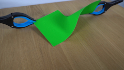
视觉工具实际返回图片 2
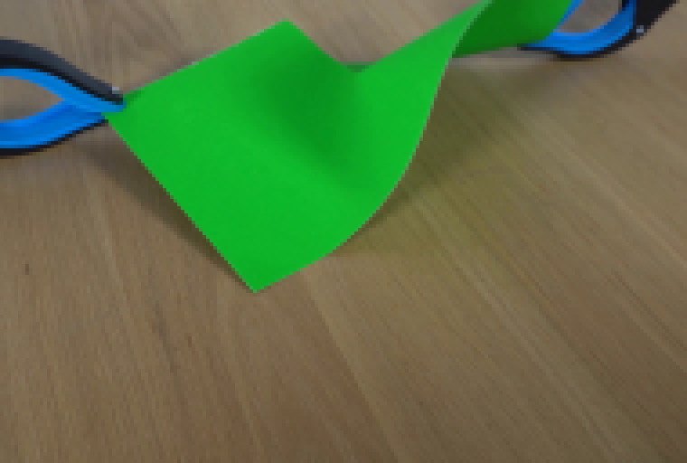
视觉工具实际返回图片 3
视觉工具实际返回图片 4
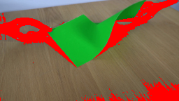
视觉工具实际返回图片 5
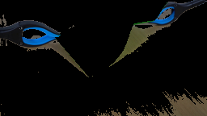
视觉工具实际返回图片 6
视觉工具实际返回图片 7
视觉工具实际返回图片 8
视觉工具实际返回图片 9
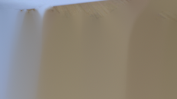
视觉工具实际返回图片 10
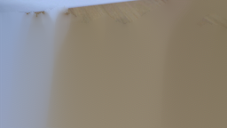
视觉工具实际返回图片 11
视觉工具实际返回图片 12
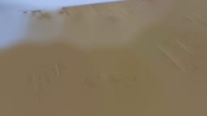
视觉工具实际返回图片 13
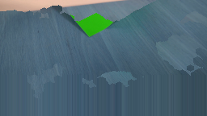
视觉工具实际返回图片 14
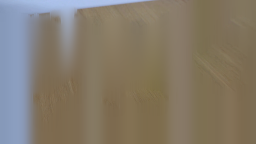
视觉工具实际返回图片 15
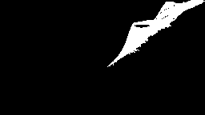
视觉工具实际返回图片 16
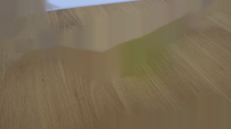
视觉工具实际返回图片 17
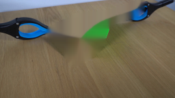
视觉工具实际返回图片 18
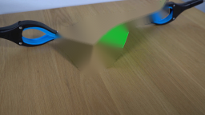
视觉工具实际返回图片 19
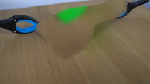
视觉工具实际返回图片 20
视觉工具实际返回图片 21
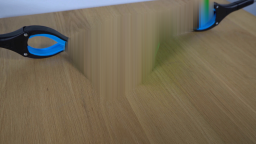
视觉工具实际返回图片 22
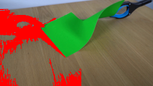
视觉工具实际返回图片 23
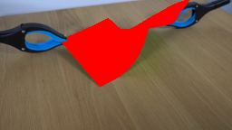
视觉工具实际返回图片 24
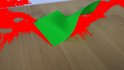
视觉工具实际返回图片 25
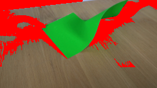
视觉工具实际返回图片 26
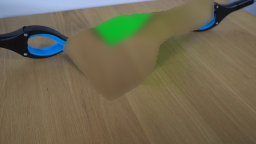
视觉工具实际返回图片 27
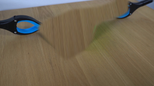
视觉工具实际返回图片 28
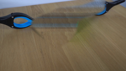
视觉工具实际返回图片 29
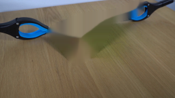
视觉工具实际返回图片 30
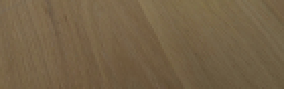
视觉工具实际返回图片 31
视觉工具实际返回图片 32
视觉工具实际返回图片 33
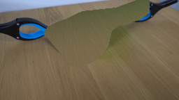
视觉工具实际返回图片 34
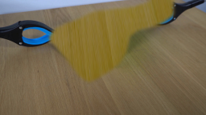
命令 60exit 0
/bin/bash -c "git status --short && test -f generate.py && sed -n '1,80p' generate.py || true"
命令 61exit 1
/bin/bash -c 'python generate.py'
命令 62exit 0
/bin/bash -c 'python generate.py'
命令 63exit 0
/bin/bash -c "python - <<'PY'
from PIL import Image
for i in [1,3,5,8,10,11,12,14,16,19]:
im=Image.open(f'frames/{i:02d}.png')
im.resize((768,432),Image.Resampling.NEAREST).save(f'.tmp/f{i:02d}.png')
PY"命令 64exit 0
/bin/bash -c "python - <<'PY'
from PIL import Image
import numpy as np
for i in [0,1,5,10,11,19]:
a=np.array(Image.open(f'frames/{i:02d}.png'))
print(i,a[60,60],a[60,120],a[20,20])
PY"命令 65exit 0
/bin/bash -c "python - <<'PY'
from PIL import Image
im=Image.open('frames/10.png')
im.crop((60,10,220,105)).resize((960,570),Image.Resampling.NEAREST).save('.tmp/f10_crop.png')
im=Image.open('frames/19.png')
im.crop((60,10,220,105)).resize((960,570),Image.Resampling.NEAREST).save('.tmp/f19_crop.png')
PY"命令 66exit 0
/bin/bash -c "python - <<'PY'
import cv2,numpy as np
for i in [0,10,11,19]:
im=cv2.imread(f'frames/{i:02d}.png')[:,:,::-1]
r,g,b=[im[:,:,i].astype(int) for i in range(3)]
green=(g>45)&(g-r>12)&(g-b>8)
print(i,'green bbox',np.where(green)[1].min() if green.any() else None,np.where(green)[0].min() if green.any() else None,np.where(green)[1].max() if green.any() else None,np.where(green)[0].max() if green.any() else None,'n',green.sum())
PY"命令 67exit 0
/bin/bash -c "python - <<'PY'
import numpy as np
from PIL import Image
for i in [0,1,5,10,11,12,14,16,19]:
a=np.array(Image.open(f'frames/{i:02d}.png')).astype(float)
r,g,b=[a[:,:,j] for j in range(3)]
green=(g>45)&(g-r>12)&(g-b>8)
# center region bbox and paper count
print(i,green.sum())
PY"命令 68exit 0
/bin/bash -c "python - <<'PY'
import numpy as np
from PIL import Image
im=np.array(Image.open('frames/10.png'))
for p in [(120,60),(140,40),(110,40),(130,31),(145,30),(160,22),(160,40),(130,50),(150,50),(140,70)]:
x,y=p; print(p,im[y,x])
PY"命令 69exit 0
/bin/bash -c "python - <<'PY'
from PIL import Image
im=Image.open('frames/10.png')
im.crop((115,15,190,60)).resize((750,450),Image.Resampling.NEAREST).save('.tmp/tear10.png')
PY"命令 70exit 0
/bin/bash -c "python - <<'PY'
from PIL import Image
import numpy as np
for i in [10,11,12,13,14,15,16,17,18,19]:
im=np.array(Image.open(f'frames/{i:02d}.png')).astype(float)
r,g,b=[im[:,:,j] for j in range(3)]
green=(g>45)&(g-r>12)&(g-b>8)
# largest horizontal gap near y=70 in paper central range
for y in [40,55,70,85]:
xs=np.where(green[y,60:221])[0]+60
# intervals
ints=[]
if len(xs):
s=xs[0];p=xs[0]
for x in xs[1:]:
if x>p+1: ints.append((s,p));s=x
p=x
ints.append((s,p))
if y==70: print(i,ints)
PY"命令 71exit 0
/bin/bash -c "python - <<'PY'
import cv2,numpy as np
from PIL import Image
im=np.array(Image.open('frames/19.png'))
# right side crop
Image.fromarray(im[0:80,145:256]).resize((888,640),Image.Resampling.NEAREST).save('.tmp/right19.png')
Image.fromarray(im[0:80,0:115]).resize((920,640),Image.Resampling.NEAREST).save('.tmp/left19.png')
PY"命令 72exit 0
/bin/bash -c "python - <<'PY'
from PIL import Image
import numpy as np
im=Image.open('first_frame.png')
# compare source crop and rendered frame 10 aligned
Image.open('frames/10.png').crop((70,0,210,100)).resize((840,600),Image.Resampling.NEAREST).save('.tmp/c10.png')
im.crop((70,0,210,100)).resize((840,600),Image.Resampling.NEAREST).save('.tmp/c0.png')
PY"命令 73exit 0
/bin/bash -c "python - <<'PY'
from PIL import Image
import numpy as np
im=np.array(Image.open('first_frame.png'))
# print difference image between frame0 and frame1 and identify changed bbox
im0=np.array(Image.open('frames/00.png')); im1=np.array(Image.open('frames/01.png'))
d=np.abs(im1.astype(int)-im0.astype(int)).max(2)
ys,xs=np.where(d>3)
print(xs.min(),xs.max(),ys.min(),ys.max(),len(xs),d.max())
# mask changed and overlay red
ov=im0.copy(); ov[d>3]=[255,0,0]
Image.fromarray(ov).resize((1024,576),Image.Resampling.NEAREST).save('.tmp/diff01.png')
PY"命令 74exit 0
/bin/bash -c "python - <<'PY'
import numpy as np
from PIL import Image
im=np.array(Image.open('first_frame.png'))
rgb=im.astype(np.int16); r,g,b=rgb[:,:,0],rgb[:,:,1],rgb[:,:,2]
green=(g>45)&(g-r>12)&(g-b>8)
blue=(b>78)&(b-r>20)&(b-g>-12)
dark=(rgb.max(2)<122)&~green
Y,X=np.mgrid[:144,:256]
left=(blue|dark)&(X<136)&(Y>13)&(Y<106)
right=(blue|dark)&(X>145)&(Y<61)
import cv2
for name,m in [('left',left),('right',right)]:
m=m.astype(np.uint8); n,lab,st,c=cv2.connectedComponentsWithStats(m,8); out=np.zeros_like(m)
for i in range(1,n):
if st[i,4]>=90: out[lab==i]=1
print(name, out.sum(), 'bbox', cv2.boundingRect(out.astype(np.uint8)))
Image.fromarray((out*255).astype(np.uint8)).save(f'.tmp/{name}mask.png')
PY"命令 75exit 0
/bin/bash -c "python - <<'PY'
from PIL import Image
im=Image.open('frames/05.png')
im.crop((0,0,256,110)).resize((1024,440),Image.Resampling.NEAREST).save('.tmp/f5wide.png')
PY"命令 76exit 0
/bin/bash -c "python - <<'PY'
import generate, numpy as np
from PIL import Image
f=np.array(Image.open('first_frame.png').convert('RGB'))
p=generate.paper_polygon(); pa=generate.polygon_alpha(p,.45); l,r=generate.clamp_masks(f); bg=generate.background_plate(f,pa,l,r)
Image.fromarray(bg).save('.tmp/bg_current.png')
Image.fromarray((pa*255).astype(np.uint8)).save('.tmp/paper_alpha.png')
Image.fromarray((l*255).astype(np.uint8)).save('.tmp/left_alpha.png')
Image.fromarray((r*255).astype(np.uint8)).save('.tmp/right_alpha.png')
PY"命令 77exit 0
/bin/bash -c "python - <<'PY'
import cv2,numpy as np
from PIL import Image
im=np.array(Image.open('first_frame.png'))
# use polygon paper mask to see exact actual source coverage mismatch via original bright green
p=np.array([[67,48],[72,40],[80,36],[95,31],[108,24],[118,20],[130,31],[145,30],[160,22],[165,15],[195,4],[209,0],[209,16],[198,24],[170,31],[155,42],[150,64],[142,76],[132,84],[120,91],[110,96],[102,90],[91,75],[79,61],[71,51]],np.int32)
m=np.zeros((144,256),np.uint8);cv2.fillPoly(m,[p],255)
rgb=im.astype(int); r,g,b=rgb[:,:,0],rgb[:,:,1],rgb[:,:,2]
green=(g>45)&(g-r>12)&(g-b>8)
# count green outside mask and mask outside green
print('green outside',((green)&(m==0)).sum(),'mask outside green',((~green)&(m>0)).sum())
ov=im.copy(); ov[green&(m==0)]=[255,0,0]; ov[(~green)&(m>0)]=[0,0,255]
Image.fromarray(ov).resize((1024,576),Image.Resampling.NEAREST).save('.tmp/poly_compare.png')
PY"命令 78exit 0
/bin/bash -c "python - <<'PY'
import cv2,numpy as np
from PIL import Image
im=np.array(Image.open('first_frame.png'))
# visualize table texture source patch and paper polygon
Image.fromarray(im[95:144]).resize((1024,196),Image.Resampling.NEAREST).save('.tmp/tableband.png')
# Build candidate bg by using vertical flipped table band rather than current, inspect
src=im[99:144]
mir=np.vstack([src,src[::-1],src,src[::-1]])
canvas=np.zeros_like(im)
for y in range(144): canvas[y]=mir[y%len(mir)]
Image.fromarray(canvas).save('.tmp/tileband.png')
PY"命令 79exit 0
/bin/bash -c "python - <<'PY'
import cv2,numpy as np
from PIL import Image
im=np.array(Image.open('first_frame.png'))
# Candidate bg: smooth synthetic table texture generated by fitting row means and noise sampled from lower band.
# First inspect vertical color profile background sides
for y in range(0,144,8):
xs=np.r_[0:45,215:256]
print(y,im[y,xs].mean(0).astype(int).tolist())
PY"命令 80exit 1
/bin/bash -c "python - <<'PY'
import cv2,numpy as np
from PIL import Image
im=np.array(Image.open('first_frame.png')).astype(np.float32)
# Synthetic table field: bilinear per-row from left/right background, plus wood texture generated deterministically from low-band high-frequency.
# Use original row y=100..143 texture horizontally, scale vertically and align row luminance.
Y,X=np.mgrid[:144,:256]
# row profile from clean x intervals [0:45] and [215:256] where possible
row_mean=np.zeros((144,3))
for y in range(144):
xs=np.r_[0:45,215:256]
# exclude clamp dark
vals=im[y,xs]
keep=vals.mean(1)>55
row_mean[y]=np.median(vals[keep],axis=0) if keep.any() else vals.mean(0)
# smooth vertical profile
for c in range(3): row_mean[:,c]=cv2.GaussianBlur(row_mean[:,c].reshape(-1,1),(1,15),0).ravel()
# horizontal variation from clean bottom band: use texture residual around smoothed row
texsrc=im[100:143]
res=texsrc-cv2.GaussianBlur(texsrc,(0,0),3)
res=res-cv2.GaussianBlur(texsrc,(0,0),(0,0))
# tile residual
tex=np.zeros_like(im)
for y in range(144):
for x in range(256):
tex[y,x]=res[(y*17)%43,x]
bg=np.clip(row_mean[:,None,:]+0.8*tex,0,255)
# preserve whole outside paper mask
paper=np.array([[67,48],[72,40],[80,36],[95,31],[108,24],[118,20],[130,31],[145,30],[160,22],[165,15],[195,4],[209,0],[209,16],[198,24],[170,31],[155,42],[150,64],[142,76],[132,84],[120,91],[110,96],[102,90],[91,75],[79,61],[71,51]],np.int32)
m=np.zeros((144,256),np.uint8);cv2.fillPoly(m,[paper],255); m=cv2.dilate(m,cv2.getStructuringElement(cv2.MORPH_ELLIPSE,(5,5)),iterations=2)
a=cv2.GaussianBlur(m.astype(np.float32)/255,(0,0),2)[...,None]
out=im*(1-a)+bg*a
Image.fromarray(np.clip(out,0,255).astype(np.uint8)).save('.tmp/bg_synth.png')
PY"命令 81exit 0
/bin/bash -c "python - <<'PY'
import cv2,numpy as np
from PIL import Image
im=np.array(Image.open('first_frame.png')).astype(np.float32)
row_mean=np.zeros((144,3))
for y in range(144):
xs=np.r_[0:45,215:256]
vals=im[y,xs]; keep=vals.mean(1)>55
row_mean[y]=np.median(vals[keep],axis=0) if keep.any() else vals.mean(0)
for c in range(3): row_mean[:,c]=cv2.GaussianBlur(row_mean[:,c].reshape(-1,1),(1,15),0).ravel()
# texture from lower clean band using per-channel highpass
texsrc=im[100:143]
smooth=cv2.GaussianBlur(texsrc,(0,0),3)
res=texsrc-smooth
# random-ish tile with fixed deterministic permutation
bg=np.empty_like(im)
for y in range(144):
for x in range(256):
bg[y,x]=row_mean[y]+0.75*res[(y*17+7)%43,x]
paper=np.array([[67,48],[72,40],[80,36],[95,31],[108,24],[118,20],[130,31],[145,30],[160,22],[165,15],[195,4],[209,0],[209,16],[198,24],[170,31],[155,42],[150,64],[142,76],[132,84],[120,91],[110,96],[102,90],[91,75],[79,61],[71,51]],np.int32)
m=np.zeros((144,256),np.uint8);cv2.fillPoly(m,[paper],255); m=cv2.dilate(m,cv2.getStructuringElement(cv2.MORPH_ELLIPSE,(5,5)),iterations=2)
a=cv2.GaussianBlur(m.astype(np.float32)/255,(0,0),2)[...,None]
out=im*(1-a)+bg*a
Image.fromarray(np.clip(out,0,255).astype(np.uint8)).save('.tmp/bg_synth.png')
PY"命令 82exit 0
/bin/bash -c "python - <<'PY'
import cv2,numpy as np
from PIL import Image
im=np.array(Image.open('first_frame.png'))
# Directly synthesize background from low-band texture: shift source y=100..143 upward by 60 with row color compensation
out=im.copy()
for y in range(0,100):
sy=min(143,y+60)
# compare row mean of clean side pixels and compensate
xs=np.r_[0:45,215:256]
ref=im[y,xs].mean(0); src=im[sy,xs].mean(0)
adj=(ref-src)
out[y]=np.clip(im[sy].astype(float)+adj,0,255).astype(np.uint8)
# only blend in paper region (avoid replacing clamps)
paper=np.array([[67,48],[72,40],[80,36],[95,31],[108,24],[118,20],[130,31],[145,30],[160,22],[165,15],[195,4],[209,0],[209,16],[198,24],[170,31],[155,42],[150,64],[142,76],[132,84],[120,91],[110,96],[102,90],[91,75],[79,61],[71,51]],np.int32)
m=np.zeros((144,256),np.uint8);cv2.fillPoly(m,[paper],255);m=cv2.dilate(m,cv2.getStructuringElement(cv2.MORPH_ELLIPSE,(5,5)),iterations=2)
a=cv2.GaussianBlur(m.astype(np.float32)/255,(0,0),2)[...,None]
final=im.astype(float)*(1-a)+out.astype(float)*a
Image.fromarray(np.clip(final,0,255).astype(np.uint8)).save('.tmp/bg_shift60.png')
PY"命令 83exit 0
/bin/bash -c "python - <<'PY'
import cv2,numpy as np
from PIL import Image
im=np.array(Image.open('first_frame.png'))
# Build texture by vertically flipping the bottom band y=99:143 and placing it at top; adjust row brightness to smooth
out=im.copy().astype(float)
band=im[99:144].astype(float)
# repeated mirror sequence, crop to 144
seq=np.vstack([band, band[::-1], band, band[::-1]])
tex=seq[:144]
# row adjust based on side background means
for y in range(144):
xs=np.r_[0:45,215:256]
ref=im[y,xs].mean(0); src=tex[y,xs].mean(0)
tex[y]=np.clip(tex[y]+ref-src,0,255)
paper=np.array([[67,48],[72,40],[80,36],[95,31],[108,24],[118,20],[130,31],[145,30],[160,22],[165,15],[195,4],[209,0],[209,16],[198,24],[170,31],[155,42],[150,64],[142,76],[132,84],[120,91],[110,96],[102,90],[91,75],[79,61],[71,51]],np.int32)
m=np.zeros((144,256),np.uint8);cv2.fillPoly(m,[paper],255);m=cv2.dilate(m,cv2.getStructuringElement(cv2.MORPH_ELLIPSE,(5,5)),iterations=2)
a=cv2.GaussianBlur(m.astype(np.float32)/255,(0,0),2)[...,None]
out=im.astype(float)*(1-a)+tex*a
Image.fromarray(np.clip(out,0,255).astype(np.uint8)).save('.tmp/bg_mirror.png')
PY"命令 84exit 0
/bin/bash -c "python - <<'PY'
import cv2,numpy as np
from PIL import Image
im=np.array(Image.open('first_frame.png'))
# inspect table hue/texture: show clean region top-left and lower with contrast stretch
for name,crop in [('top',im[0:70,0:70]),('bottom',im[75:144,0:70]),('right',im[45:100,210:256])]:
x=cv2.resize(crop,(420,420),interpolation=cv2.INTER_NEAREST)
Image.fromarray(x).save(f'.tmp/{name}_table.png')
PY"命令 85exit 0
/bin/bash -c "python - <<'PY'
import cv2,numpy as np
from PIL import Image
im=np.array(Image.open('first_frame.png'))
# For background: infer per-pixel table color using large Gaussian smoothing of only table pixels + add sampled noise.
rgb=im.astype(np.float32)
paper=np.array([[67,48],[72,40],[80,36],[95,31],[108,24],[118,20],[130,31],[145,30],[160,22],[165,15],[195,4],[209,0],[209,16],[198,24],[170,31],[155,42],[150,64],[142,76],[132,84],[120,91],[110,96],[102,90],[91,75],[79,61],[71,51]],np.int32)
pm=np.zeros((144,256),np.uint8);cv2.fillPoly(pm,[paper],255);pm=cv2.dilate(pm,cv2.getStructuringElement(cv2.MORPH_ELLIPSE,(5,5)),iterations=2)
# Add clamps mask via import
import generate
l,r=generate.clamp_masks(im)
mask=np.clip(pm/255+l+r,0,1)
valid=1-mask
# normalized convolution smoothing
k=41
num=cv2.GaussianBlur(rgb*valid[...,None],(0,0),18)
den=cv2.GaussianBlur(valid.astype(np.float32),(0,0),18)[...,None]
smooth=num/np.maximum(den,1e-4)
# texture residual from valid area, tile with noise deterministic
res=(rgb-smooth)
# use only valid residual values
tex=np.zeros_like(rgb)
for y in range(144):
for x in range(256):
tex[y,x]=res[(y*19+5)%144,(x*11+13)%256]
# Actually random shift can introduce clamp; create texture noise from bottom band residual
bg=smooth+0.9*tex
out=rgb*(1-mask[...,None])+bg*mask[...,None]
Image.fromarray(np.clip(out,0,255).astype(np.uint8)).save('.tmp/bg_normconv.png')
PY"命令 86exit 0
/bin/bash -c "python - <<'PY'
import cv2,numpy as np
from PIL import Image
im=np.array(Image.open('first_frame.png')).astype(np.float32)
import generate
pa=generate.polygon_alpha(generate.paper_polygon(),0.45)
l,r=generate.clamp_masks(im.astype(np.uint8))
fg=np.clip(pa+l+r,0,1)
valid=(fg<0.05)
# low frequency normalized convolution
sigma=20
num=cv2.GaussianBlur(im*valid[...,None],(0,0),sigma)
den=cv2.GaussianBlur(valid.astype(np.float32),(0,0),sigma)[...,None]
low=num/np.maximum(den,1e-4)
# highpass texture from bottom clean band, multiple shifted tiles
src=im[99:144]
src_smooth=cv2.GaussianBlur(src,(0,0),2.5)
res=src-src_smooth
# create deterministic patch mosaic highpass over whole frame
hp=np.zeros_like(im)
rng=np.random.default_rng(43)
tile=14
for y0 in range(-tile,144+tile,tile):
for x0 in range(-tile,256+tile,tile):
sy=int(rng.integers(0,res.shape[0]-tile))
sx=int(rng.integers(0,256-tile))
patch=res[sy:sy+tile,sx:sx+tile]
# crop to canvas
y1=max(0,y0); y2=min(144,y0+tile); x1=max(0,x0); x2=min(256,x0+tile)
if y2<=y1 or x2<=x1: continue
hp[y1:y2,x1:x2]=patch[y1-y0:y2-y0,x1-x0:x2-x0]
# blur seams a little
hp=cv2.GaussianBlur(hp,(0,0),0.6)
bg=np.clip(low+1.1*hp,0,255)
# use original outside fg, feather 1.2 px inside
alpha=cv2.GaussianBlur(fg,(0,0),1.0)[...,None]
out=im*(1-alpha)+bg*alpha
Image.fromarray(np.clip(out,0,255).astype(np.uint8)).save('.tmp/bg_quilt.png')
PY"命令 87exit 0
/bin/bash -c "python - <<'PY'
import cv2,numpy as np
from PIL import Image
im=np.array(Image.open('first_frame.png')).astype(np.float32)
# make background via row-wise texture from clean bottom band, but blend low frequency from normalized convolution
import generate
pa=generate.polygon_alpha(generate.paper_polygon(),0.45)
l,r=generate.clamp_masks(im.astype(np.uint8))
fg=np.clip(pa+l+r,0,1); valid=fg<.05
num=cv2.GaussianBlur(im*valid[...,None],(0,0),14);den=cv2.GaussianBlur(valid.astype(np.float32),(0,0),14)[...,None]
low=num/np.maximum(den,1e-4)
# sample texture from y=90..143, shift x by row-dependent amount and y with mirror
src=im[90:144]
smooth=cv2.GaussianBlur(src,(0,0),3); hp=src-smooth
tex=np.zeros_like(im)
for y in range(144):
sy=min(53,(y*7)%54)
shift=int(6*np.sin(y*0.17))
tex[y]=np.roll(hp[sy],shift,axis=0)
bg=np.clip(low+1.0*tex,0,255)
a=cv2.GaussianBlur(fg,(0,0),1.5)[...,None]
out=im*(1-a)+bg*a
Image.fromarray(np.clip(out,0,255).astype(np.uint8)).save('.tmp/bg_quilt2.png')
PY"命令 88exit 0
/bin/bash -c "python - <<'PY'
import numpy as np
from PIL import Image
im=np.array(Image.open('first_frame.png'))
for y in [90,100,110,120,130,140]:
# std by channel across x
print(y,im[y].std(0).astype(int).tolist(), im[y].mean(0).astype(int).tolist())
PY"命令 89exit 0
/bin/bash -c "python - <<'PY'
import numpy as np
from PIL import Image
im=np.array(Image.open('first_frame.png'))
# Background texture is low contrast; quantify local patch variances in table only.
for (x,y,w,h) in [(0,60,60,80),(190,60,66,80),(60,100,120,44),(100,80,60,60)]:
p=im[y:y+h,x:x+w].astype(float)
print((x,y,w,h),p.mean((0,1)),p.std((0,1)),p.std(1).mean(0))
PY"命令 90exit 0
/bin/bash -c "python - <<'PY'
import cv2,numpy as np
from PIL import Image
im=np.array(Image.open('first_frame.png')).astype(np.float32)
# use bottom texture plus smooth low-frequency fit, but amplify texture by 1.5 to match visible wood grain
import generate
pa=generate.polygon_alpha(generate.paper_polygon(),0.45);l,r=generate.clamp_masks(im.astype(np.uint8));fg=np.clip(pa+l+r,0,1);valid=fg<.05
num=cv2.GaussianBlur(im*valid[...,None],(0,0),12);den=cv2.GaussianBlur(valid.astype(np.float32),(0,0),12)[...,None];low=num/np.maximum(den,1e-4)
src=im[99:144]; hp=src-cv2.GaussianBlur(src,(0,0),2.0)
tex=np.zeros_like(im)
for y in range(144):
sy=(y*11)%45; shift=int(8*np.sin(y*.23))
tex[y]=np.roll(hp[sy],shift,axis=0)
bg=np.clip(low+1.7*tex,0,255)
a=cv2.GaussianBlur(fg,(0,0),1.4)[...,None]
out=im*(1-a)+bg*a
Image.fromarray(np.clip(out,0,255).astype(np.uint8)).save('.tmp/bg_quilt3.png')
PY"命令 91exit 0
/bin/bash -c "python - <<'PY'
import cv2,numpy as np
from PIL import Image
im=np.array(Image.open('first_frame.png')).astype(np.float32)
# Try actual image completion using nearest-neighbor patches from table area only (PatchMatch-like simple).
import generate
pa=generate.polygon_alpha(generate.paper_polygon(),.45); l,r=generate.clamp_masks(im.astype(np.uint8)); fg=np.clip(pa+l+r,0,1)
mask=fg>.2
# build a smooth base via normalized conv
valid=~mask
num=cv2.GaussianBlur(im*valid[...,None],(0,0),10); den=cv2.GaussianBlur(valid.astype(np.float32),(0,0),10)[...,None]
base=num/np.maximum(den,1e-4)
# copy 5x5 texture patches from source valid regions, randomized, only where masked
out=base.copy(); rng=np.random.default_rng(7)
# candidate source clean pixels: lower band and sides
ys,xs=np.where(valid & (np.indices((144,256))[0]>55))
choices=rng.integers(0,len(xs),size=mask.sum())
coords=np.argwhere(mask)
for (y,x),k in zip(coords,choices):
sy,sx=ys[k],xs[k]
y0=max(0,min(144-5,y-2)); x0=max(0,min(256-5,x-2))
# fill only current pixel from shifted texture patch location
out[y,x]=im[sy,sx] + (base[y,x]-base[sy,sx])
# blur only background for seam reduction
blur=cv2.GaussianBlur(out,(0,0),1.2)
out=np.where(mask[...,None],blur,im)
Image.fromarray(np.clip(out,0,255).astype(np.uint8)).save('.tmp/bg_patchsample.png')
PY"命令 92exit 0
/bin/bash -c "python - <<'PY'
import cv2,numpy as np
from PIL import Image
im=np.array(Image.open('first_frame.png')).astype(np.float32)
# Very clean approach: use a synthetic wood texture based on row profiles and anisotropic sinusoid/noise.
Y,X=np.mgrid[:144,:256].astype(np.float32)
# vertical color gradient sampled from right table side at x=220..255, robust per row
prof=np.zeros((144,3))
for y in range(144):
vals=im[y,215:256]
good=vals.mean(1)>60
prof[y]=np.median(vals[good],axis=0)
for c in range(3): prof[:,c]=cv2.GaussianBlur(prof[:,c].reshape(-1,1),(1,9),0).ravel()
# anisotropic low-frequency wood grain; rotate grain slightly, frequency ~15 px along x, 2 px y
rng=np.random.default_rng(43)
noise=rng.normal(0,1,(H:=144,W:=256))
grain=cv2.GaussianBlur(noise,(0,0),sigmaX=6,sigmaY=0.7)
grain=(grain-grain.mean())/grain.std()
# add long streaks with sinusoidal variations
streak=0.65*np.sin(X*0.20+Y*0.045)+0.35*np.sin(X*0.43-Y*0.03+1.7)
texture=(0.8*grain+0.45*streak)[...,None]*np.array([3.2,2.8,2.4])
bg=np.clip(prof[:,None,:]+texture,0,255)
import generate
pa=generate.polygon_alpha(generate.paper_polygon(),.45);l,r=generate.clamp_masks(im.astype(np.uint8));fg=np.clip(pa+l+r,0,1)
a=cv2.GaussianBlur(fg,(0,0),1.2)[...,None]
out=im*(1-a)+bg*a
Image.fromarray(np.clip(out,0,255).astype(np.uint8)).save('.tmp/bg_synthgrain.png')
PY"命令 93exit 0
/bin/bash -c "python - <<'PY'
import cv2,numpy as np
from PIL import Image
im=np.array(Image.open('first_frame.png')).astype(np.float32)
# direct sample with row translation: replicate each row's texture from same row where visible, via horizontal periodic extrapolation
out=im.copy()
# use rightmost visible strip of each row to extrapolate paper gap with linear left-right interpolation, then add vertical wood grain texture from y+20
paper=np.array([[67,48],[72,40],[80,36],[95,31],[108,24],[118,20],[130,31],[145,30],[160,22],[165,15],[195,4],[209,0],[209,16],[198,24],[170,31],[155,42],[150,64],[142,76],[132,84],[120,91],[110,96],[102,90],[91,75],[79,61],[71,51]],np.int32)
m=np.zeros((144,256),np.uint8);cv2.fillPoly(m,[paper],255);m=cv2.dilate(m,cv2.getStructuringElement(cv2.MORPH_ELLIPSE,(5,5)),iterations=2)
# Fill using per-row linear between nearest nonmasked left/right
for y in range(144):
xs=np.where(m[y]==0)[0]
if len(xs)<2: continue
# segments of masked pixels between visible columns
maskrow=m[y]>0
x=0
while x<256:
if not maskrow[x]: x+=1; continue
s=x
while x<256 and maskrow[x]: x+=1
e=x-1
lx=s-1; rx=e+1
if lx>=0 and rx<256:
for xx in range(s,e+1):
t=(xx-lx)/(rx-lx)
out[y,xx]=im[y,lx]*(1-t)+im[y,rx]*t
# add fine texture from lower band to paper area
tex=im[100:144]-cv2.GaussianBlur(im[100:144],(0,0),2)
for y in range(144):
for x in range(256):
if m[y,x]: out[y,x]+=0.65*tex[(y+7)%44,x]
Image.fromarray(np.clip(out,0,255).astype(np.uint8)).save('.tmp/bg_rowinterp.png')
PY"命令 94exit 0
/bin/bash -c "python - <<'PY'
import cv2,numpy as np
from PIL import Image
im=np.array(Image.open('first_frame.png')).astype(np.float32)
# mask paper only and fill with table texture shifted downward; preserve clamp exactly. Increase texture contrast slightly.
paper=np.array([[67,48],[72,40],[80,36],[95,31],[108,24],[118,20],[130,31],[145,30],[160,22],[165,15],[195,4],[209,0],[209,16],[198,24],[170,31],[155,42],[150,64],[142,76],[132,84],[120,91],[110,96],[102,90],[91,75],[79,61],[71,51]],np.int32)
m=np.zeros((144,256),np.uint8);cv2.fillPoly(m,[paper],255);m=cv2.dilate(m,cv2.getStructuringElement(cv2.MORPH_ELLIPSE,(5,5)),iterations=2)
# clean table texture from y=100..143: build row sequence by taking that band and shifting x to avoid same texture
src=im[100:143].astype(np.float32)
tex=np.zeros_like(im)
for y in range(144):
sy=(y*13)%43
dx=int(9*np.sin(y*.21))
tex[y]=np.roll(src[sy],dx,axis=0)
# correct brightness with side table profile
for y in range(144):
xs=np.r_[0:50,210:256]
valid=np.ones(256,bool);valid[xs]=False
# use side mean in original
ref=im[y,xs].mean(0); cur=tex[y,xs].mean(0)
tex[y]=np.clip(tex[y]+ref-cur,0,255)
# blur texture slightly and blend only paper mask
tex=cv2.GaussianBlur(tex,(0,0),0.55)
a=cv2.GaussianBlur(m.astype(np.float32)/255,(0,0),1.0)[...,None]
out=im*(1-a)+tex*a
Image.fromarray(np.clip(out,0,255).astype(np.uint8)).save('.tmp/bg_shifttex.png')
PY"命令 95exit 0
/bin/bash -c "sed -n '1,380p' generate.py"
命令 96exit 0
/bin/bash -c "find . -maxdepth 2 -type f -printf '%p %s\\n' | sort | sed -n '1,180p'"
命令 97exit 0
/bin/bash -c 'git diff --stat -- generate.py; git status --short -- generate.py frames inspection.png transition_check.png pixels.npz index.html 2>/dev/null || true'
命令 98exit 0
/bin/bash -c 'python generate.py'
命令 99exit 0
/bin/bash -c "python - <<'PY'
from PIL import Image
for i in [9,10,11,12,13,15,19]:
Image.open(f'frames/{i:02d}.png').resize((1024,576),Image.Resampling.NEAREST).save(f'.tmp/n{i:02d}.png')
PY"命令 100exit 0
/bin/bash -c "python - <<'PY'
from PIL import Image
import numpy as np
for i in [0,1,2,3,4,5,6,7,8,9,10,11,12,13,14,15,16,17,18,19]:
a=np.array(Image.open(f'frames/{i:02d}.png'))
# diff to prev
if i:
b=np.array(Image.open(f'frames/{i-1:02d}.png'))
d=np.abs(a.astype(int)-b.astype(int)).mean()
else:d=0
print(i,round(d,3))
PY"视觉工具实际返回图片 35

视觉工具实际返回图片 36
视觉工具实际返回图片 37
视觉工具实际返回图片 38
视觉工具实际返回图片 39
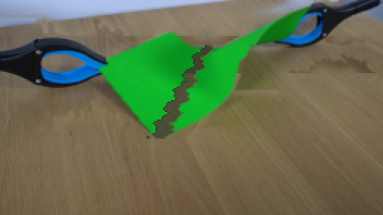
视觉工具实际返回图片 40
视觉工具实际返回图片 41
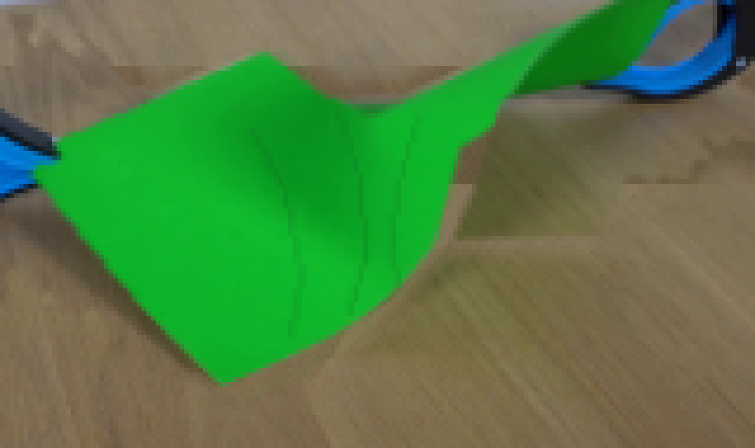
视觉工具实际返回图片 42
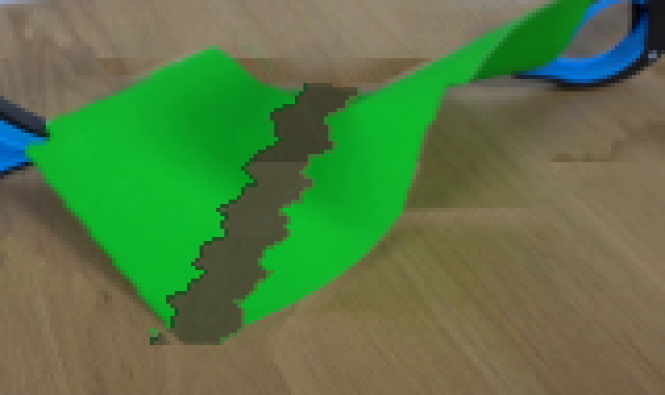
视觉工具实际返回图片 43
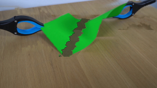
视觉工具实际返回图片 44
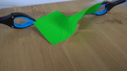
视觉工具实际返回图片 45
视觉工具实际返回图片 46
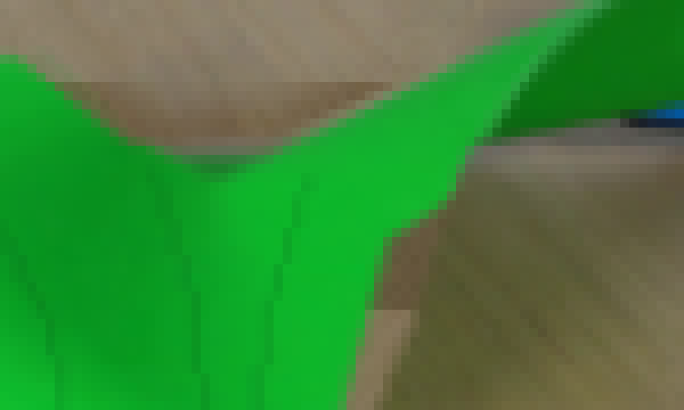
视觉工具实际返回图片 47
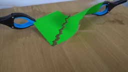
视觉工具实际返回图片 48
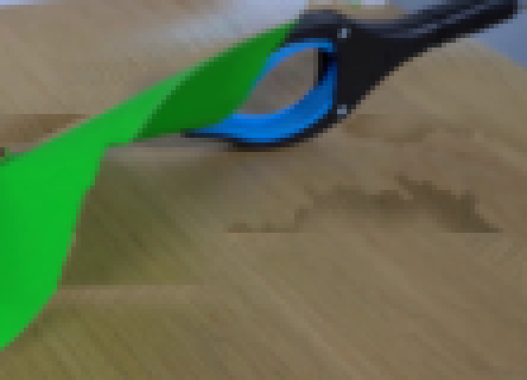
视觉工具实际返回图片 49
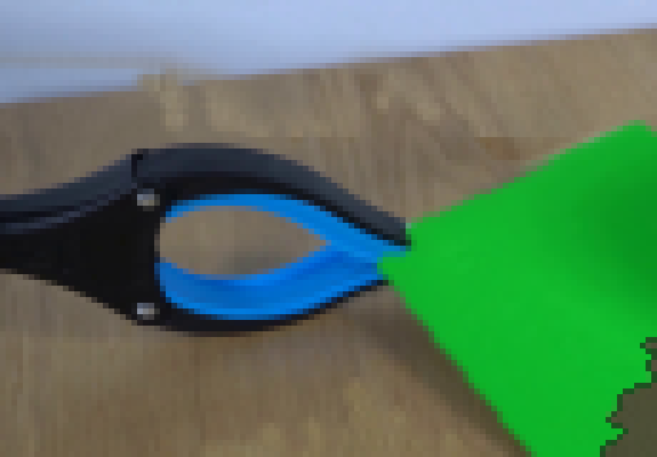
视觉工具实际返回图片 50
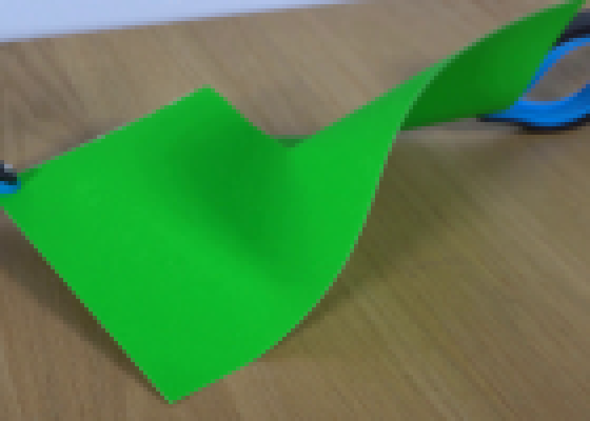
视觉工具实际返回图片 51
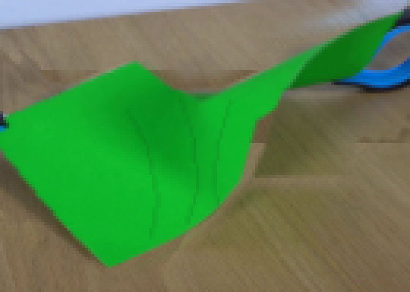
视觉工具实际返回图片 52
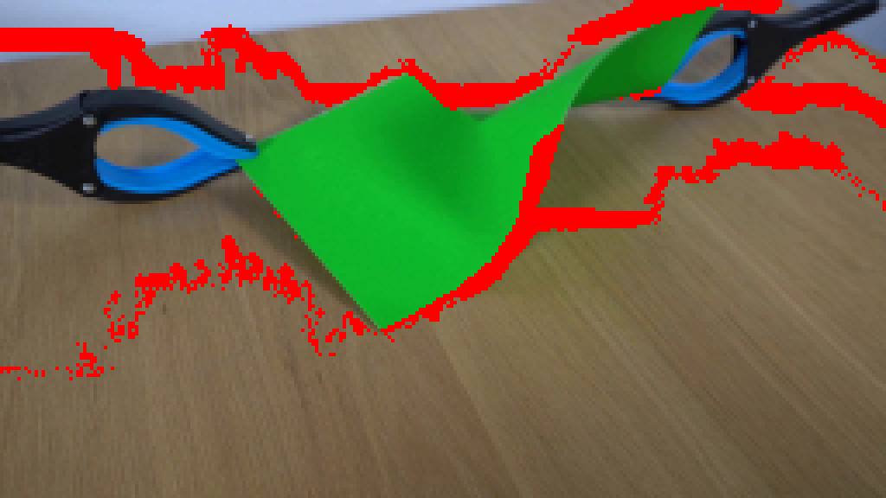
视觉工具实际返回图片 53
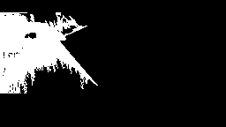
视觉工具实际返回图片 54
视觉工具实际返回图片 55
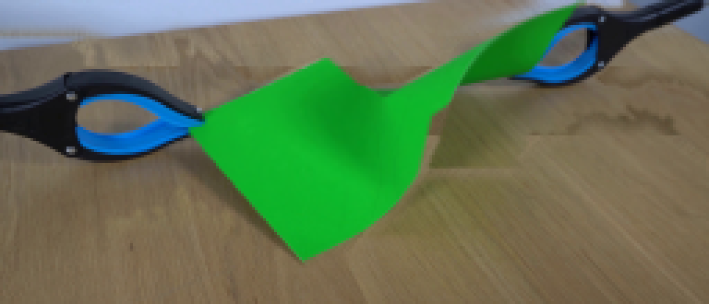
视觉工具实际返回图片 56
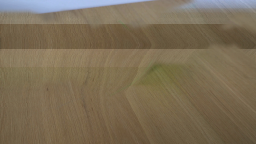
视觉工具实际返回图片 57
视觉工具实际返回图片 58
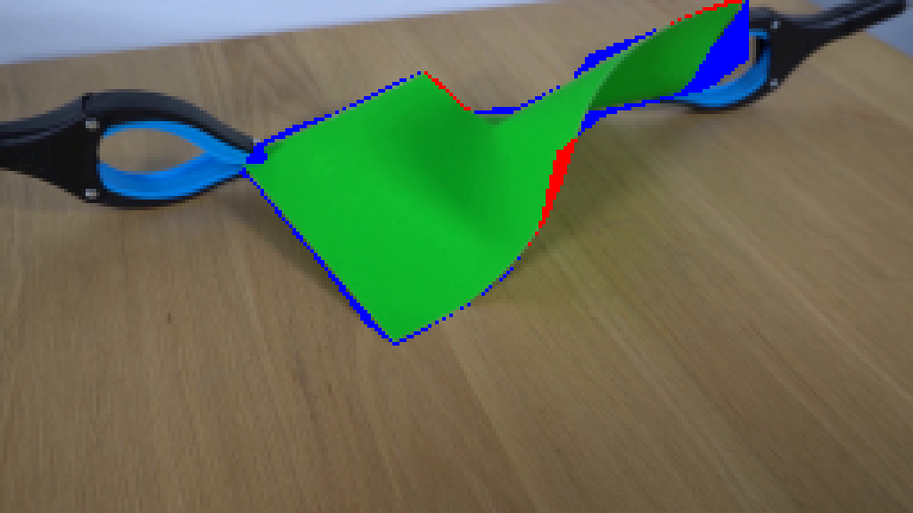
视觉工具实际返回图片 59
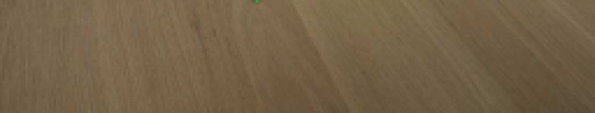
视觉工具实际返回图片 60
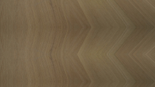
视觉工具实际返回图片 61
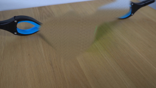
视觉工具实际返回图片 62
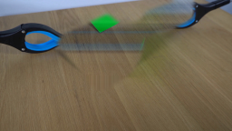
视觉工具实际返回图片 63
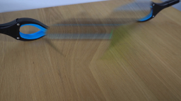
视觉工具实际返回图片 64
视觉工具实际返回图片 65
视觉工具实际返回图片 66
视觉工具实际返回图片 67
视觉工具实际返回图片 68
视觉工具实际返回图片 69
视觉工具实际返回图片 70
视觉工具实际返回图片 71
视觉工具实际返回图片 72
视觉工具实际返回图片 73
视觉工具实际返回图片 74
视觉工具实际返回图片 75
视觉工具实际返回图片 76
保存候选 2 份；完成命令 100 次；可验证图片返回 76 张。原始 API 响应与完整日志保留在本地。